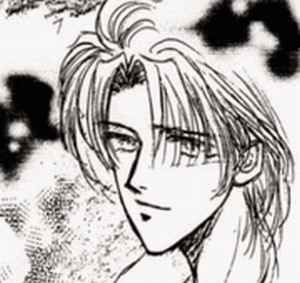
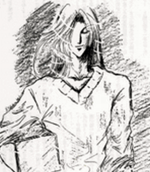

| あこうの森 安芸の海から: 櫻沢学園シリーズ第3部完結編 魁＆伊織シリーズ(高校生編3) (ラヴェンダーノベルズ) | |
| 高倉志樹 | |
| TAKAKURASHIKI (2018) | |
高倉志樹

片岡伊織
全寮制男子校 私立櫻沢学園高等部二年生。岡山本社の大手不動産会社「株式会社白亜
」の御曹司。四歳上の姉・沙保子、双子の兄・香織
の三人兄弟の末っ子だったが、昨年香織が亡くなったため「白亜」の次期後継者となる。唯一の趣味の絵を親に禁じられ鬱屈とした日々を送っていた。
幼少より優秀な長男の陰に隠れた存在として両親からも愛されずに育ったため、かなり暗い性格だったが開き直って淡々と生きる強さと、甘えのない家庭育ちゆえのクールで大人びた視点の持ち主でもある。百七十三センチ 六十キロ

紅林 魁
櫻沢学園二年生で学園のスーパーアイドル。フランス系ハーフの父親と日本人の母を持つクォーター。母親は日本を代表するデザイナー紅林麗子で自身もファッションブランドを起業している。
父親の顔も知らない私生児で、苦労した母親に一日でも早く恩返ししたいと仕事を成功させようと頑張っている。また、年の割に人間の裏側を見すぎたためかなりの人間嫌いで、自分と釣り合う優秀な人間としかつき合わない信念を持っている。百八十六センチ 七十三キロ
榕 － クワ科の半常緑高木
樹高は約十から二十メートル。樹皮はきめ細かい。幹は分岐が多く、枝や幹から多数の気根を垂らし、岩や露頭などに張り付く。新芽は成長につれ色が赤などに変化し美しい。アコウの種子は鳥類によって散布されるが、その種子がアカギやヤシなどの樹木の上に運ばれ発芽して着生し成長すると、気根で親樹を覆い尽くし枯らしてしまうこともある。そのため「絞め殺しの木」とも呼ばれる。
これは樹高の高い熱帯雨林などで素早く光の当たる環境を獲得するための特性である。参考文献・Wikipedia
ゴールデンウィークも終わり、僕たちの学園にまたいつもの日常が戻って来た。魁と僕、俊邦や慎、そして司と忍にも。
「片岡先輩、これも渡すの忘れてました～」
忍が元気良く、僕たちの部屋に入ってきた。
「ええ？ また？ もうたっくさん頂いたよ？」
忍は今回の帰省で大量にお土産を買い込んできたらしい。有名なお寺のお守りやら美味しいと評判のお漬物やら珍しい京野菜やら(どうやって食べるんだろ？)
「これを一番に差し上げたかったんです。これはね、自分の好みで調合できる唐辛子なんです」
言いながら、忍は僕の目の前に小さな竹筒みたいな容器を差し出した。
「唐辛子？」
「ええ。普通は七味じゃないですか。唐辛子、生姜、紫蘇、山椒、陳皮、ええとそれから」
目をつぶって上を向いて呪文を唱えるみたいに言う忍に、魁はくすっと笑った。
「とにかく、普通はそんなのが七種類入ってるんですが、それを好みで調合できるんです」
「好みって言っても、どれを多くするかどれを減らすかなんてどうやって決めるんだ？」
魁が面白そうに口を挟んだ。
「だからそれはぁ」
忍は少しうるさそうに魁を見て、それから、
「僕が勝手に片岡先輩を思って調合したんです！」
僕ににっこりと天使の笑みで笑った。
「ぼ、僕を思って？」
「はいっ」
魁が吹き出した。
「伊織を想って唐辛子を調合した？一体どんな唐辛子なんだよ」
珍しく肩を揺らしてくすくす笑う魁に、忍は大いに不満足そうだ。
「僕を思ってって？」
僕にも見当がつかないや。僕のための唐辛子なんて。
「つまり、片岡先輩は食が細いじゃないですか。だから食欲が増すように食欲増進効果のある麻の実を多く入れたんです！」
嬉しそうに忍は胸を張った。僕と魁は顔を見合わせた。
「ああ、なるほど。そうなんだ」
僕は純粋に嬉しくなった。僕の事、想ってくれたって事に。けれど魁は笑いのスイッチが入ってしまったみたい。
「調合って、それだけのことか？」
大笑いの魁に、忍は「そうですよ」とキッと向き直った。
「いけませんか？ 僕の愛です」
忍。ありがとうね。君の気持ち、有難く受け取ったよ。
「麻の実って、食欲増進効果があるの？」
「そうなんですよ。麻はもともとクワ科とされていましたが、今はアサ科の一年草で大麻のことです。古代中国ではスパイスとして食欲増進効果に──」
「大麻？！ 大麻って、あの大麻か？」
「そうですよ、紅林先輩」
驚く魁に、忍はやれやれと言う顔をした。
「素人はこれだから......大麻と言っても唐辛子に使うのは種子。マリファナなんかに使うのは成熟した雌株の花と上部の葉っぱ。だからまったく別もんです」
「なんだ、そうなのか」
「忍、良く知ってるね」
感心して僕が言うと、忍はちょっと得意げに胸を張った。
「──ってさっきウィキに書いてあったんだよな」
「つかさ......橘先輩っ！」
司がドアからひょいと顔を覗かせて、忍は焦った顔をした。
「大麻の事、必ず魁に突っ込まれるからって、さっき必死でウィキで調べたんだもんな」
「も、もう、いらない事を！」
「なーんだ、そうなんだ」
魁はふふっと笑った。
「これだから素人は......とか何とか言ってくれたよな、忍。お前も疑問に思ったから調べたんだろ？」
「そうですけど」
忍はぷーっと膨れて、傍らの司を恨めしそうに見上げた。
「でもこいつが片岡のことを思って一生懸命調合したのは本当だよ。受け取ってやってくれよ」
司に言われて、僕は改めて「ありがとう」と忍に言った。渡されたその小さな竹筒をギュッと握りしめた。
ごめんね、みんな心配かけて。神戸への帰省の途中、僕は父からの電話であまりにも緊張して倒れてしまったんだ。それからずっと眠ってて、起きたのは魁の家のすぐ近くだったから、忍や司ともほぼ喋らないまま別れてしまってたんだよね。だからずっと心配してくれてたんだ。
「ごめんね。忍、橘くん。でも僕はもう大丈夫だから」
僕は魁を見た。魁は黙って小さく笑った。
「ああ！ 何ですか？ 二人で見つめあったりして。何か凄いイイコトがあったんじゃないでしょうね」
僕は吹き出した。イイコトって言うんだろうか。確かにいろいろな事があったけど、結果として魁は凄く大人になったし僕は──。
「明日からの四国に持って行かせてもらうね」
僕は部屋の片隅の、もうすっかり用意の出来たボストンに目を遣った。
「学校が始まったばかりでまた休まなきゃならないのか？」
司が言う。
「うん。父の命令だからね」
忍と司が顔を見合わせて心配そうに僕を見る。でも僕はもう大丈夫。少なくともこの前のようなことにはならない。......と思いたい。
僕は笑って、
「休むと言っても三日間だけだし、それに魁も同じような日程で学校休まなきゃならないらしいよ」
僕の言葉に忍と司は「えっ！」と魁を見た。
「お前もどこかへ行くのか？」
「ああ、ちょっとパリにな」
魁の視線の先にも僕と同じくもうすっかり用意の出来たキャリーバッグが置いてある。
「パリ？！」
二人は声を揃えた。
「今度のコレクションの準備で、どうしても行って来なくちゃならなくなったんだ。俺も明日から三日の予定でパリに行ってくる」
「やっとまた逢えたのに、二人ともいなくなっちゃうんですかぁ？」
忍が泣きそうな声を出した。とか何とか言って、君には司がいるじゃないか。僕は内心で小さく笑った。
「あ～あ、つまんないな」
膨れる忍に司は、
「じゃあそろそろ俺たちは部屋に引き上げよう」
と、忍を促した。
「えーー？ どうして？ まだもう少し喋っててもいいじゃない」
「バカだな、俺たちお邪魔だろ？」
僕と魁は吹き出しそうになった。忍は「あっ」と自分の口に手を当てた。
「そうでしたね、ごめんなさい」
「バ、バカ、そんなことねーよ！」
「そ、そそ、そうだよ、邪魔だなんて......」
焦りながら否定する僕たちを尻目に、司たちはにやにや笑いながら「お邪魔しました」と出て行った。
一気に静かになる部屋。僕たちは互いのベッドに向き合って座ったまま何となく喋れなかった。
「どうしても行かなきゃならないのか？ 四国」
「うん。父の命令だからね」
僕はベッドに足をぶらぶらさせながら言った。何のかんの言っても初めての父からの指令だからね。やらない訳にはいかないから。それに僕は少しの自信さえ持っていたんだ。今の僕ならやり遂げられる、必ず父の期待に応えられる、応えてみせるってね。
「魁こそ気をつけてね」
「俺は何度も行ってる良く知った場所だから」
ああ、そうだよね。魁は幼い頃フランスで育ったんだもんね。
「伊織......そっちに行っていいか？」
魁の言葉に全身がびくっと震えた。
「......駄目か？」
「......いいよ」
魁がゆっくり僕のベッドにきた。僕の隣に座り、僕の目をじっと見た。
「好きだよ、伊織」
「僕も......好きだ」
ゆっくりと重なってくる魁の唇。ああ......僕も魁が好きだ──。
「その何とか言う秘書の男と浮気なんてするなよ」
唇を離して魁が言う。 僕はちょっと笑った。
「当たり前だろ？ するわけないよ」
また重なってくる唇。魁の吐息が熱い。
「伊織、まだしちゃ駄目か？」
「えっ？」
問われても答えられず、僕は下を向く。 どうしよう。嫌ではない。むしろ早くそうなりたいとさえ今はもう思っている。でも何かが僕を阻んでいる。モラル？勿論それもある。けどそれだけじゃない。
僕は楡の樹坂で決めたんだ。魁と肩を並べられようになったら、魁にふさわしい人間になれたら、その時こそ君と「性別を超えた魂のソウルメイト」になれるって。
身体はただの魂の入れ物に過ぎない。魂が惹かれあった者同士なら、物理的に繋がり合っても何の問題もないと僕は思う。だからそれまでは──。
黙っている僕に魁は「ごめん、そんなに悩むなよ」と、頭をくしゃくしゃっと撫でてくれた。
「違うんだ。嫌じゃないんだよ、魁。これは僕自身の問題なんだ」
僕は口を閉じた。魁の綺麗な顔が真剣に僕を見つめていたから。息が交わるほど近くで。
またキスをされると目を閉じた時、
「言い忘れてました！ 麻の実は食欲増進だけじゃなく、強壮剤としてもよく効くらしいですから！」
いきなりドアを開けて忍が入ってきた！ ひーーーっ！
「び、びっくりするだろ？！ いきなり入ってくるなよ！ ノックぐらいしろっ！」
僕らは大慌てで身体を離した。
「あ、だってさっき大麻の話ししてたでしょ？ 花でも種子でもやっぱり同じに催淫効果があるのかな、なんて」
忍はにーっと笑った。
「し、知らねーよっ、そんなこと！」
魁の声が珍しく裏返ってる。僕は真っ赤になって俯いていた。
「片岡先輩、四国は南国ですから大麻みたいな熱帯地方の植物がそこら辺に生えてるかもしれませんからね。気をつけてくださいよ。それだけ言っときたかったんです。どーもお邪魔しましたー♪
」
忍はいつもの小悪魔スマイル全開で部屋を出て行った。
「ったくあいつ......」
ちらっと見たら、魁も真っ赤になっていた。僕は何だかおかしくて笑ってしまった。魁も笑った。 魁、楡の樹坂から帰って本当によく笑うようになった。勿論、僕もだけど。十六年の人生で、今僕は最高に生気がみなぎっている感じがしている。何でも出来そうな気分だ。
「何だか気がそがれちまったな。伊織、もう寝るか？ 明日早いんだろ？」
「うん、そうだね」
魁が立ち上がった。ふわりと香るいつもの魁の匂い。ちょっと個性的ないい香りだ。
「魁、この香水、何て言うの？」
「ん？ これか？ これはな」
魁はちょっと間を置いて、
「『Je te veux
』って言うんだ」
僕のわからないフランス語の名前を魁は言った。流暢なフランス語。それからなぜか魁は眩しそうに僕を見た。
「『Je te veux
』か......」
僕は四国に着いたら真っ先にこの香水を買おうと思った。魁がいないこの三日間が、寂しくならないように。心を強く持ち、父の命令をしっかりと果たせるように。
翌朝、僕は櫻沢学園前のバス停からバスに乗り、町まで行ってＪＲの駅前で荷物を持って立っていた。
『バスで駅まで行くのか？ 迎えは来ないのか？』
『駅まで来てくれるよ』
『駅まで自分で行けってか？ 駅からここまで車で二十分で来れるんだから来てもらえよ。荷物もあるのに』
魁は心配したけど、そんなもの最初から期待していないから僕は全然平気だった。父が、僕を心配する訳もないし、気遣ってくれるはずもない。ただ父が気にするのは、僕が失敗しないか、父の顔に泥を塗る真似はしないかと言うこと。そうならないように頑張るしかないね。
「せめてタクシーで......」
心配しきりの魁に、僕は「大丈夫だって」と笑って制した。こんなことくらいで最初から楽しようなんて考えてたらきっと駄目だ。今回の事は相当覚悟を決めてかからなきゃ。
僕はカバンにしっかり入れてきたスケッチブックのことを思った。四国でも絵を描くつもりだからだ。
そうしなければ八月の二科展に間に合わないから。
勿論、父に言いつかった仕事はきちんとやるよ。僕はやると決めたんだ。仕事も、生きがいも。そして父に認めてもらうのだ。僕の生き方を。僕の人生は僕が決めるのだという事を。
それにしても今朝は寒い。今日は朝から雨模様。五月もとうに半ばを過ぎていると言うのに結構肌寒かった。昨日も一昨日もずっと雨だった。まだ入梅りした訳でもないのに。
「ジャケット、もう少し厚手の着て来たらよかったな」
呟いて襟を立てた時、霧雨の中を大きな黒い車のシルエットが見えて来た。 父の車だ。否応なしに緊張する。
父はいない。父は今海外に行っているから。だからあの車には乗っていないというのに、僕の体が反射的に震えはじめた。
僕は心を落ち着かせる。大丈夫だ、伊織。大丈夫。 震えているのはきっと寒さのせいだ。
車が徐々に近づいてくる。父の趣味の車──シボレーのカマロ。戦車みたいだ。その「静かな戦車」は僕の目の前にすっと停まった。
目立つ車だからだろう、立ち止まって人が見てる。後部席のドアが開いた。黒いスーツの足が見え、中から大きな影が降りて来た。
「お待たせして申し訳ありません、伊織様」
父の秘書、椎名孝之
は、いつも通りの無表情で静かに目を伏せた。心がないと言うのか、感情がまるでないと言うか、椎名は僕が子供の頃からこんな風だった。先代の父の秘書の息子で、小さな頃から僕の家の離れで育った椎名。僕より十才と少し年上だから、まだ三十才くらいのはずだけどこの落ち着き。僕は彼が苦手だった。心が全く読めないんだもの。
「ううん、別に待ってないよ。それより椎名、君は元気だっ──」
「お荷物をどうぞ。先方との約束の時間がありますので」
僕の言葉をさえぎって、椎名は僕の荷物をトランクに乗せ始めた。取り付く島もありはしない。まぁこれもいつものことだけれど。
父は椎名のこういう所も気に入っているのだろう。余計な事は話さず、言われた事だけを忠実に、しかも的確にこなしていく。その上何かあった時は臨機応変に対応でき、万事そつなくこなしてしまう。つまり相当優秀だという事だ。何事もワンマン経営の父からすれば、まさに打ってつけの男だ。
よし、わかったよ。どうせ彼は忠実な父の部下だ。父の代わりといっては何だけど、父と戦う気持ちで椎名、君とも戦うよ。勿論、仕事の時は一緒に頑張らなくちゃならないけれど、そうでない時は僕は君のそういう態度に屈したり萎縮したりしないからね。
「わかった。すぐに行こう」
僕が後部席に座ったら、椎名は僕の隣に乗り込んで来た。 そこで椎名は僕が手にしていた小さなカバンを見た。
「それもお預かりしましょうか」と言うので、僕は「これはいいんだ」と断った。
このカバンの中には魁がプレゼントしてくれたスケッチブックと、夕べ忍がくれた京都土産の唐辛子が入ってる。僕を仲間と思ってくれる、僕を好きでいてくれる、そんな大切な人たちからの想いが詰まってる。
僕はそのカバンを胸に抱えなおした。そんな僕を椎名はちらりと一瞥し、
「そちらのスーツにお着換えください」と言った。
見ると、ウィンドウに真新しいスーツカバーがかかっていた。
「社長のご命令です。これに着替えて四国に入られるようにと」
椎名がそのスーツカバーを渡してくれた。中には一目で高級そうな新品のスーツが入っていた。勿論これは僕のため、と言うより父が恥をかかないためだ。
株式会社白亜(うちの会社の名称だ)の次期社長としてふさわしい格好をしろという事だ。
「わかったよ」
僕がジャケットを脱ごうとしたら 、椎名が手を差し出した。
「お鞄、お預かりします」
僕は少しためらったが、言われるまま椎名に渡した。ただし、
「椎名、そのカバン、大切なものが入ってるから大事に扱ってくれ」
と一言付け加えて。
僕の一言で、カバンをシートの横に置こうとしていた椎名の動きが止まった。そしてそのカバンを自分の膝の上に乗せた。
「ありがとう」
礼を言って、僕はスーツに着替え始めた。驚いた事に、そのスーツは僕のサイズピッタリだった。着る時ちらっと見たら、僕でも知っているイタリアの高級ブランドのスーツだった。
着替えが済んで椎名からカバンを受け取ると、ホッとして肩の力が抜けた。窓ガラスに目をやると、細い雨が窓ガラスを濡らしていた。
一体僕は四国でどんな仕事をするのだろうか。
「参りましょう」
運転手が静かに車をスタートさせた。瞬間、ふわりとかすかな香りが漂った。これはもしかして椎名の？
「ラ ニュイ ド ロム？」
僕の記憶が正しければ、これはラ ニュイ ド ロムと言う香水だ。そして、さらに記憶違いでなければ、これは父のつけていた香りだ。
「君は香水まで父に忠実なんだね」
少しの嫌味を込めて言うと、椎名は書類に目を落としながら、
「梅雨時は身だしなみとしてつけるよう社長に言われています」
素っ気なく答えた。
なんだ、これも社長の命令なのか。それにしても香りまで同じにしなくても良さそうな物なのに。側近がつける香水まで自分の気に入るものをつけさせたいんだね。まったく父らしい。
「君は好きなのか？ この香水」
この雨の森のような香り。
「社長のお好みです」
そうだよね。愚問だった。無口で愛想がなくて、どちらかと言えば「無粋」とも言える椎名が香水なんて興味ないよね。
そういえば魁の香水、「ジュテヴー」だったな。とってもいい香りだった。ちょっとエキゾチックで、バニラみたいな甘い香りもした。けど不思議な事に、この椎名の香りと少し似ているところもある。よくはわからないけど。
「まったく君の忠誠心には恐れ入るよ」
呟いた僕には返事もせず、椎名は僕に書類の束をどさっと渡した。
「これに目を通しておいてください。一旦決まった開発工事なのですが、ちょっと問題が起きまして。住民が反対しているのです」
僕はその膨大な書類の量に驚いた。
「汚水処理の業者との談合はまとまったのですが、住民が納得せず──」
──え？ 談合？
「住民代表の自治会長が今になって値段を吊り上げてきたのです」
自治会長？ 値段？
「最初の百万はすでに受け取っているのに『住民をまとめるのにもう少しいる』などと申し出て来て」
「はぁ？！」
僕は思わず椎名に向き直った。
「それじゃあ何か？ その土地を開発するのに最初から汚水処理施設をそこに設置することにしてて、その業者から父は賄賂をもらってて、しかも自治会長にも賄賂を渡してて、住民を抑えてもらうようにって？ なのに今になって自治会長が欲を出して来てトラブッてるってそういうことなのか？」
「そうです」
さも当たり前のように椎名は答えた。開いた口が塞がらないとはこの事だ。一体どこまで欲の皮の突っ張った連中なのだろう。
父は汚水業者から賄賂をもらい、開発した土地を売ってボロ儲けし、業者はそこの住民から利益を得、自治会長は業者から賄賂をもらって住民を説得する──なんて汚い大人たちだろう。
「自治会長は汚水処理業者からだけではなく、我が社からも賄賂を要求しているのです」
「え？」
「先に汚水処理業者から百万受け取り、今度は我が社にも百万出せと言って来ているのです。それをびた一文払わずに事を収めろと言うのが社長のご命令です」
「はぁ？！」
僕は大声を出した。そんな汚い大人を相手に？ 僕みたいなど素人の高校生が？ そんなの無理に決まってるじゃないか！ いくら最善を尽くそう、やり遂げようと思っていたけど、こんなことは想定外だよ。絶対に無理だ！
「椎名、下ろしてくれ。そんなの僕には無理に決まっている。絶対に無理だ！ 下ろしてくれ！」
僕はパニックになって車から降りようとドアに手をかけた。だけどドアは頑丈にロックがかかっててビクともしない。
「椎名っ！」
僕はすがる様に椎名を見たが、椎名は少し眉間に皺を寄せて、
「落ち着いてください」
と冷静に言った。
「だって......！」
「落ち着いてください伊織様。伊織様一人に交渉をさせたりしません。私がいますから」
『私がいますから』───その椎名の言葉は不思議なほどに、僕の心を落ち着かせたのだった。
「私が一緒に交渉します。それに地元の有力者の協力も得ています。伊織様一人での交渉など土台無理です。ただそういう交渉の場に社長がいないということになれば、相手が『軽く見られた』と感情をこじらせると面倒なので、次期社長である伊織様に同席するようにと社長は言われているのです」
「......そういうことなのか」
僕は少しホッとしてシートに深く身を沈めた。そんなトラブルを全権委任されるなど、いくら何でも荷が重過ぎる。父に最初に任される仕事としては許容範囲を大きく超えているよ。
「伊織様。ひとつ申し上げておきますが」
椎名の言葉に僕は彼を見た。表情のない顔。感情を読み取れない。
「私たちの世界はこういう事が常識です。これから伊織様もこの会社の社長になって行かれる身なのですから、こういう事にいちいち過敏になられては困ります」
「ぼ、僕は......！」
「『そんな汚い真似はしない』......ですか」
椎名に一瞥される。父ほどではないけれど、椎名の目にも迫力がある。椎名の言葉は父の言葉と同義語だからだ。
「そういう青臭い感情は今すぐにお捨てください。一流の起業家になりたいのであれば、万事に臨機応変に対応できなければなりません」
僕は拳を握りしめた。父のことだから、そういう汚い事くらいやっているだろうとは思ってはいた。けれど、実際に僕がやれと言われたら、そんな事出来るのだろうか。最初は抵抗があっても、徐々に当たり前になってしまうのだろうか。「大人」になるとはそういう事なのだろうか。
僕が黙って俯いていたら、
「今すぐにとは言いません。高校を卒業し、大学を出で正式にこの会社に入られる時までには、そういう事に冷静に対処できる覚悟を身につけて頂ければ宜しいかと思います」
前を向いたまま椎名は訥々
と 話した。それも社長の意思なのか？ それとも──。
駄目だ。椎名の顔からは何の感情も伺う事は出来なかった。だけど、もしこれが椎名の考えだとしたら、椎名ってもしかしたら──優しい？
僕はため息をついて窓の外を見た。魁......。君は今頃関空に向かう車の中だね。魁、思ったよりもずっと大変そうだよ。今回の仕事だけじゃなく、大人になるという事は。君はこんな風な汚い大人の世界をたくさん見て来たんだよね。だからあんな風に頑なに肩肘を張って生きて来たんだったよね。
僕はそんな汚い大人の側に回らなくちゃならないらしいよ。君は一体どう思うのだろうか。そんな風になった僕を、君は好きでいてくれるのだろうか。そしてそんな僕が、君と肩を並べ生きて行く資格があるのだろうか。
三日後、再び君に逢える日までが果てしなく遠く感じるよ。けど、僕は僕だ。いくら汚い大人になれと言われても、心まで染まってしまうなんてきっと僕には出来ない。
ならば、僕は僕のやり方で、そう、例えば誠意で人の心を動かせるような、そんな大人になればいいのじゃないのだろうか。
そうすれば君のそばに胸を張って堂々と並べるのじゃないか？ きっとそうだ。父はそういうやり方でやって来たかも知れないが、僕までそのやり方に染まらなくてもいいはずだ。それできちんと実績を上げれば父も文句はないはずだ。問題はやり方ではなく、あくまで業績を上げればいいのだから。
僕は一度消えそうになった闘志がまた湧いてくるのを感じた。魁、僕は頑張るよ。卒業しても、君と肩を並べて胸を張って生きれるようにね。
車はそろそろ早島インターチェンジに着こうとしていた。この道を国道ニ号線に向かえば僕の家のある牛窓に行く。
あの大きな家で、母さんは今頃どうしているのだろうか。いつものように、可織の部屋で日がな一日ぼんやりと過ごしているのだろうか。
僕と目が合うといつも僕を責めるような目で僕を見る母さん。
『何故お前が生きているの？何故可織が死んでしまったの』──その目に耐えられなくて、父にも逢いたくなくて、櫻沢に入学してから一度も家に帰らなかった。いつも姉さんのところでぶらぶらと長期の休暇を過ごしていた。
魁と仲良くなるまでは、僕の心はずっと死んでいた。君が救ってくれたんだ。あの暗い苦しい日々から。
学園を卒業したらもうそれで終わりだと思っていたけど、大学に行っても社会に出ても君とずっと付き合っていきたくて僕は僕の運命と戦うことに決めたんだ。だから力を貸してね、魁。
僕は膝の上で両手を組み合わせ、ギュッと手を握り締めた。
高知県と言えば、僕が知っているのはくじらウォッチングとか、昔々の歌「南国土佐を～」と言うやつとか、お遍路さんとか、そんなイメージしかなかったが、実際は普通の地方都市という感じだった。
だだ南国特有の植物が異国感を感じさせ、僕の絵心が刺激された。
時間はお昼の十二時を少し回ったところ。
「ちょうどいい時間ですね」
椎名が腕時計を見て言ったのと、車が一軒の馬鹿でかい家の前に停まったのはほぼ同時だった。
料亭かと思ったが、どうやら個人の邸宅みたいだった。純和風の立派な家。どっしりとした石垣で作られた塀の中には大きなフェニックスが茂っている。門には『漆原』と表札がかかっていた。
運転手が先に降り、インターフォンで何か喋っている。と、中から自動で門扉が開錠された。
「参りましょう」
椎名は重いブリーフケースを手に車を降りた。僕もその後に続いた。
車から降りたら、途端に高知の空気が体にまとわりついてきた。櫻沢の町よりかなり暖かかった。雨は降ってはいないが、空気が水分を含んでじっとりと重い感じ。
門の中に入ると、更に凄い豪邸だとわかった。石畳の両脇には大きな日本庭園があり、錦鯉の泳ぐ池まである。その池には太鼓橋がかかり風情があっていい感じだ。
「ここは？」
「ここである人物と会食の予定です」
「ある人物って？」
椎名は少し間をおいて、
「室戸市から出た高知県議です」
「県議？」
ああ、県会議員のことだね。
「ここはその県議の私邸です。我々が今回片づけねばならない問題の土地は室戸市にあります。彼は県議として普段この高知市に住んで仕事をしていますが、本拠地は室戸です」
それを聞いて僕は、椎名が言ってた『地元の実力者』がこの県議のことなのだとわかった。
「もうひとつ言えば、彼は県議になる前は室戸市内で大手の不動産会社を経営していました」
僕は立ち止まった。なるほど、父の同業者って訳だ。不動産の世界に精通し、今は実力ある地方の政治家って訳だね。それで父は彼を見方につけたという訳だ。流石ですね、父さん。何事にも抜け目のない『仕事の鬼』だ。
それにしても、なんて大きな家だろう。門から玄関までまだ着かない。僕の牛窓の家もそれなりに大きいけれど、とてもじゃないが及ばない。
「彼はもともと室戸の名士の家柄で、室戸にはこれより大きな本家があります。今回の問題の土地は彼が所有していた土地です」
「そうなんだ」
「我が社が彼からその土地を買い、分譲したところすぐに完売したのですが」
「今になって自治会長がゴネだしたと」
「そういうことです」
「念のために聞くけど、その汚水処理の会社って......」
「この県議の妻の実家です」
やっぱりね。すべて出来上がった図式って訳だね。大人の世界って本当に汚いや。
「加えて言いますと、問題の自治会長もこの県議の親族の一人です。県議の妻の義理の兄、つまり妻の姉の婿養子で、本来ならばその汚水処理会社の社長になる予定だったようですが、実際には妻の弟が会社を継いでいます」
僕は途中から意味がよくわからなくなった。県議の妻の義理の兄？ 県議の奥さんのお姉さんの旦那さんってことだよね。しかも養子さんなわけだね。本当はその会社を継ぐために養子に入ったのに、どうして継がなかったんだろう。
「一旦は社長になったそうですが、彼にはその器がなかったようで、すぐに経営が思わしくなくなってしまったそうです。そこで急きょ彼は解任され、弟が跡を継ぎました」
なるほどね。能力不足だったわけだ。
ようやく家の玄関にたどり着いた。応対に出たお手伝いさんらしき人は、僕と椎名に丁寧に頭を下げ「どうぞこちらへ」と家の中に招き入れた。僕たちはお手伝いさんの後に続いた。
廊下はピカピカに磨き上げられ、縁側から見える庭園がまた素晴らしい。壁にはさりげに東郷青二の絵が飾られている。一体いくつ部屋があるのだろうか。
「こちらでお待ち下さい」
通されたのは三十畳ほどの和室で、床の間には今の時期にふさわしい紫陽花の生け花が飾られている。掛け軸も柳に蛙で、これもまた梅雨時にふさわしいものだった。
見事な欄間は紫檀。ここから見る日本庭園の素晴らしさは圧巻だった。
「社長を解任された後、彼は今度は飲食業などに手を出していましたが、元来いい加減な性格らしく何をしてもことごとく失敗したそうです」
僕は何も言えなかった。能力のない人間の行く末を見るようで。何だか背筋が寒くなりそうだった。
「かと言って身内であるゆえに放り出すことも出来ず、仕方なく今回その土地開発で出来たニュータウンの自治会長として、実家である処理会社と住民とのパイプ役をやらせることにしたのですが、百万では足りなかったようですね」
椎名は軽く笑った。
「その人の奥さん、つまりこの県議の奥さんのお姉さん、立場ないよね」
小さく呟いたら椎名は口をつぐんだ。僕はその奥さんの気持ちを察して気の毒になった。おそらく愛して結婚したのだろう。なのにその男が自分の身内のお荷物になってしまい、今回もまたこうして問題を起こしているって事をどれほど悲しんでいるだろうと。
「貴方はつくづく経営者には向いていないかもしれませんね」
ぽつりと言った椎名の言葉に僕が「え？」と顔を上げた時、襖の向こうからバタバタと廊下を走って来る足音が聞こえて来た。
「お父様は？ まだ？ ああ良かった」
可愛らしい女性の声が聞こえる。誰だ？
「すみません、遅れてしまって......！」
ガラリと襖が勢い良く開いた。そこには息を切らし、頬を真っ赤に上気させた制服姿の女の子がちょこんと立っていた。
──これが、父の政略によって後に僕と深い関わりを持つ事になる、漆原美由紀
との初めての出逢いだった。
「まぁまぁ、リラックスして。足を崩してください」
その邸宅の主、漆原
裕一郎
は、いかにも大物と言った風情で僕らの前に悠然と腰を下ろした。
「恐れ入ります」
椎名は頭は下げたが膝は崩さなかった。もちろん僕もだ。
漆原氏はふっと笑って「君か、宏
の片腕と言う男は。確か椎名......」
「孝之と申します。漆原先生」
「聞いているよ、君のことは。まだ若干三十になるかならないかと言う若さで、あの片岡宏
が全幅の信頼を置いているとね」
「社長には父の代からお世話になっております」
「おお、そうらしいね。君を産んですぐ母上が亡くなって、それ以来宏の家で育ったとか。子供心に苦労をしたんだろうね」
「とんでもない。社長にも奥様にも心より良くして頂きました」
椎名は表情ひとつ変えず、漆原氏の言葉に頭を下げた。父はともかく、母が椎名に良くした事なんてなかったはずだ。父と香織にしか興味がなかったんだもの。
いや、よくするどころか全く逆だ。唐突に思い出したが、椎名は僕の母に冷たく当たられていた。僕がまだ幼い頃のことでそんなにはっきりとは覚えていないけど、確か母が椎名を叩いていたのを見た記憶がある。
その頃はまだ香織が生きていたので僕は好きな絵に没頭していて、その日も裏庭でスケッチしていたんだ。そしたら母のヒステリックな怒鳴り声が聞こえて見に行ったら椎名が、当時多分高校生位だった椎名を母が平手打ちしているところだった。
椎名はもうその時から今の無表情さで、黙って母の平手打ちを受けていた。子供心に見てはいけないものを見た気がして、僕は慌ててその場を去ったのだ。
「君のような側近がいて、宏もさぞ心強い事だろうな」
漆原氏は膝を崩し、背広の上着を脱いだ。年は父とそう変わらないだろう。五十前後といったところか。
だかどちらかと言えば神経質で線の細い僕の父と違い、豪快で精力的、悪く言えば「野卑」と言った雰囲気がある。
笑顔も父の張り付いたような営業スマイルと違い、一見腹の底から笑っているかのように見える。だが決してその目は笑っていない。
魁や司もそうだったけど、こういう野心家と呼ばれる男は初対面の人間を必ず値踏みする。そして値踏みが済んでから、自分が主導権を握るためにそれぞれのやり方でマウンティングするのだ。
魁や司は無視だったけれど、この男はさすがに県議だけある。「慇懃無礼
」と言う方法で、すでに僕たちより優位に立っていた。
「勿体ないお言葉、いたみいります」
椎名は深々と頭を下げた。
「この度は漆原先生のお力をお借りする事態になり、まことに申し訳ないと社長が申しておりました。本来でしたら片岡宏自らここに参上しなければならないのは承知しておりますが、どうしても抜けられない仕事が入っておりまして、今日は宏の代わりに次期社長である片岡伊織が参りました」
急に紹介された僕は慌てて、
「この度は宜しくお願いいたします」
と頭を下げた。漆原氏は僕を見てにわかに相好を崩した。
「いやぁ、君が伊織君かね。まぁまぁそう硬くならずに、本当に足を崩してください。そうしてもらわなければこちらも寛げない」
僕は少し違和感を覚えた。さっきまで椎名と喋っていた漆原氏とは全く別人のように感じたからだ。
椎名と対峙していたときはまさに「慇懃無礼」だったのに、僕にはむしろへりくだるかのような愛想の良さだ。
「ふんふん、なかなかのハンサムガイじゃないか。君は宏よりはお母上に似ているみたいだね。お母上はお元気かね？」
母の事を聞かれ少しだけ動揺した。この男はどこまで僕の家の事情を知っているのだろうか。
「はい、まぁ元気にしております」
多分、だけど。本当は何もかも知っているのかも知れなかった。さっきの話しからして、父とこの男が通通なのは明白だった。
「さ、本当に、どうぞ足を崩して」
僕は椎名をちらりと見たら、椎名は目で頷いた。
「恐れ入ります。それではお言葉に甘えさせて頂きます」
「そうそう、若いんだから遠慮はいかんよ。遠い所を大変だったね。酒でも勧めたいところだが高校生ではそうも行かないね。それは何かな、アイスコーヒーか。ふみさんは気が利かないな。高校生ならコーラとかの方がいいのじゃないかい？」
驚くぐらいの気の遣いようだ。僕は何だか変な気分になった。まるで何か下心でもあるのじゃないかと疑うほどだ。
「いえ、もうこれで十分です」
僕は愛想笑いをしてアイスコーヒーを一口飲んだ。
「ところで伊織君。学校の方はいいのかね」
「はい。特別に休みを取って来ましたから」
「そうかね。まぁいずれは君が継ぐ会社なのだから、こういう経験も大事だろう。ある意味、学校で勉強するより社会に出てからは余程役に立つからね」
「はっはっ」と漆原氏は身体を揺らして笑った。
「そうですね」
僕は額に嫌な汗が浮かんできた。
「どうかね、高知は。良いところでしょう。温暖で風光明媚で」
「はい、そうですね」
「三日と言わず、一週間ぐらい滞在すればどうですか？」
僕はアイスコーヒーを吹き出しそうになった。さすがにおかしい。これは何か魂胆があるのは明白だ。僕にこんなに媚びを売って、一体なんの目的があるんだ？
「どうかね？その間はここに泊まればいいいし、何だったら美由紀も学校を休んであちこち案内して差し上げれば──」
「お父様、お話はもうそのくらいで。それよりお腹がすきましたわ」
漆原の言葉を明るい女の子の声が遮った。僕は正直ホッとした。
「はっはっ、そうかそうか。わかったよ美由紀。そうだな、もうとっくに昼を過ぎているからな」
「そうよ、お父様。さっきから一人でペラペラ喋って。片岡さんだって困った顔してたわよ」
ギクッとしてその子を見たら、僕に小さくウィンクした。思わずドキリとしてしまった。
「ああ、これはすみませんでした。私の悪い癖でね。気に入ったら相手の都合はお構いなしで強引にお近づきになろうとするものでしてね」
「い、いいえ」
まぁ今回無理なお願いをしたのはこちらなのだし、何だかわからないけど気に入ってもらえたのならいずれにせよ良かったのかも知れない。
「ほんとよ、お父様。そのうちみんなに嫌われてしまうわよ」
肩をすくめてくすっと笑った。よく見たら凄く可愛い子だった。ピンクの艶々した唇、サラサラのロングヘアにパッツン前髪。その奥にふさふさの睫毛に覆われた大きな瞳が印象的だ。
「それは困るな。わかったよ、気をつけよう。伊織くん、この通り歯に衣着せぬはっきりした娘で」
と、漆原氏は僕を見て笑った。
「いいえ」と返事しながら僕は、違和感の正体に何となく気づいて来た。
「改めて紹介します。娘の美由紀です。隣町にある私立のまぁ、いわゆる『お嬢様学校』と言われている高校の一年生です」
「漆原美由紀です。初めまして」
女の子は──美由紀はペコリと頭を下げた。白いカッターに赤いリボンタイ。ミニの紺色チェックのスカート姿の美由紀はいかにも今時の女子高生だった。慌てて僕も自己紹介する。
「片岡伊織です。私立櫻沢学園高等部二年に在籍しています」
「櫻沢？！ あの有名な？！」
美由紀が目を丸くした。え？ 有名？
「私たち女子高生の間では伝説の学園なんですよ、櫻沢学園って。山陰の山奥に建つセレブの息子ばかりが通う全寮制男子校でしょ？何だか漫画の中の設定みたい。そうなんだぁ、伊織くん、櫻沢のお坊ちゃまなんだ」
美由紀はうっとりと僕を見た。
「そ、そんな事......」
おまけに「伊織くん」と甘ったるい声で呼ばれ、何だかこそばゆくなる。
「ふふ、伊織くん、真っ赤になった」
「これ、美由紀。男をからかうものじゃない」
漆原氏にたしなめられて美由紀は「ごめんなさい」と小さく舌を出した。本当に明るくて屈託のない女の子だ。
「さぁ、挨拶はこれくらいにして、本当に腹が減った。本来なら夜に一席設けるところだが、今夜はまぁそれどころじゃなさそうだからね。昼飯で勘弁してくださいよ」
漆原氏が両手を叩いた。
「ふみさん、飯だ。飯の支度をしてくれ」
そうなのだ。今夜はこの豪快な代議士に多大な迷惑をかけなければならない。まぁ彼の身内の問題でもあるのだから、本当のところは仕方ないとも言えるのだけどね。
「失礼いたします」
すっと襖が開いてさっきの家政婦さんが顔を出した。その後ろからまた別の家政婦さんも現れた。次々に料理が運ばれて来るその向こうで、美由紀は僕ににっこりと笑いかけた。
和やかに食事も済んだ頃、漆原氏はやはりと言うか、僕の想像通り美由紀に『片岡君に高知の町を案内してあげなさい』と提案して来た。
美由紀ははなから僕に興味津々だったし、僕も取り立てて断る理由などあるはずもなく、美由紀と一緒に彼女の家の車に乗せられて高知の町に出た。
今夜の打ち合わせとかしなくていいのかと気にはなったが、「さぁさぁ」と勧める漆原と、黙って「どうぞ」と目で合図する椎名に促され、渋々と言ったら美由紀には悪いけれど出てきたのだ。
折衝のことについてははなから素人の僕などに出番のある筈もなく、もしかしたら本当の目的はこっち
だったのかもしれないと僕は思い始めていた。
父の考えそうなことだと思った。能力のない僕に、強力な後ろ盾
を用意しようという魂胆なのだ。自分の会社のために。やっぱり僕の人生など父のコマの一つでしかないのだ。自然とため息が漏れた。
魁は今頃どうしているのだろう。きっとショーの準備に全神経を注いでいるのだろうね。あの年でもう立派に仕事をこなしている。魁がいなければあの会社は成り立たない。
僕とは大違いだ。はなからお飾りでしかない僕。
けれど今回はそれを覆して見せようと意気込んで来たのに。仕事どころかこんなお膳立てを考えられていたなんてね。
「伊織くん、びっくりしたでしょ」
「え？」
美由紀がいたずらっ子のような顔で僕を見ていた。
「父の強引さに呆れたんじゃない？」
「ああ......」
彼の強引さと言うよりも、いかに僕の認識が甘かったかという事にね。
「もう気づいてると思うけど、父と伊織くんのお父様の魂胆に」
「......みたいだね」
僕はまたため息が漏れた。
「迷惑だったでしょ？ 相手が私みたいな女の子で」
美由紀はちょっとだけ悲しそうな顔をした。そう、これは父と漆原氏が仕組んだ僕と美由紀のいわば「お見合い」だったのだ。無論、椎名も先刻承知していたのだ。どうりでおかしいはずだ。こんな素人の高校生の僕にやらせるには重すぎる初仕事だったもの。
「いや、そういう訳では......」
美由紀がどうこうという訳じゃない。ただこんな方法を取られるほど、僕はやっぱり無能だと思われている事が悲しかっただけだ。しかも、頑張って業績を上げるという見込みすら持たれていない事がわかって。
魁、僕も頑張るつもりでここに来たけど僕にはそのチャンスさえ与えてもらえないみたいだよ。頑張って自分の事を誇れるようになりたかったのに。そしたら今度こそ僕は──君と一つになれると思っていたのに。
「ごめんね」
「え？」
「やっぱり迷惑だったんだよね」
「い、いや......」
美由紀は本当に悲しそうに俯いた。
「私は伊織くんを見た瞬間、『ラッキー！』って思ったんだけどな」
「......」
僕はどう答えていいかわからなかった。美由紀とは今日が初対面だし、まさか見合いをさせられるなんて夢にも思っていなかったし、第一僕には好きな人が──いる。
「いいわ。私、諦める」
美由紀はにっこり笑った。
「けど、今日一日でいいから私とデートしてくれる？」
「デ、デート？」
屈託のない笑顔でそう言われ、僕は何だか申し訳なくなった。こんな僕なんかを気に入ってくれるなんて、本当はありがたい事なんだよね。ましてやこんな可愛い女の子が。
「あ......」
その時僕は、もしかしたらこの話を僕が断ったら、今回の折衝にも支障が出るのではと突然気がついた。どうしよう。だからと言って......。
「伊織くんの考えてること、大体わかるよ。大丈夫。私の事断っても今回の仕事、お父様にちゃんとやってもらうから」
僕は驚いて美由紀を見た。美由紀は寂しそうな顔で笑った。
「美由紀さん......」
「美由紀、って呼んでくれないかな。その方が恋人気分になれるから」
言ってから恥ずかしそうに顔を隠した。いい子なんだな、この子。僕は素直にそう思った。
そして有難いと思った。美由紀がこんなさっぱりした性格で。
ごめんね、美由紀。僕たちの出逢いがもう少し早ければ、そして別の出逢い方ならもしかしたらもしかしたかもしれなかったよ。けど僕はもう出逢ってしまってたんだよ。僕の大切なパートナーに。
僕たちは暫し走る車の中で沈黙していた。美由紀が何か呟いた。
「何？」
美由紀の言葉が聞き取れなくて美由紀を見た。
「伊織くん、何だか寂しそう」
僕はもう一度驚いた。この子はどうしてこんなにも僕のことがわかるのだろうか。
「さっきの秘書の人......椎名さん？ あの人も寂しそうな目をしていたけど、伊織君もとっても寂しそうな目をしてる」
椎名が？ 寂しそうだって？！ あの無表情からどうやってそんな感情を読み取れるんだ？
「あの人は大人だから別にいいんだけど。伊織くん、どうしてそんなに寂しそうなの？」
美由紀に見つめられ、僕は言葉に詰まった。僕の寂しさは僕の存在価値のなさに自分自身で打ちのめされているからだ。せっかく頑張ろうと思っても、そのチャンスさえ与えてもらえない程見くびられている事だ。
「私じゃ力になれないかな」
美由紀が恥ずかしそうに、でも真剣に見つめて来る。優しいんだね。そして頭もいい。人の気持ちがわかる思いやりも持っている。僕なんかには勿体ないくらいの女の子だ。
「ごめんね。心配させて」
僕は気持ちを切り替えようと思った。父がそういうつもりならそれでいい。それでも僕は僕のやり方で父と戦わなければならないんだ。魁、僕に勇気を与えてほしい。君の存在が今の僕の勇気の全てだよ。
君と一緒にいたい。その気持ちだけが今の僕の支えだ。
「そうだね。せっかくの父たちのご厚意なんだし、今日は一日楽しく遊ぼうか」
美由紀はパッと顔を輝かせた。
「うんうん、そうしよっ！」
夜には問題の折衝が待っている。美由紀はああ言ったけど、美由紀とのことが駄目になったとわかっても、漆原氏は本当に協力してくれるのだろうか。それでも僕はやるしかなかった。これが父との、ううん、自分自身との戦いの第一歩だから。
「どこに行く？ 伊織くん、どこか行きたい所はある？」
「そうだなぁ。どこと言われても僕もよくわからないし」
「室戸だったらなぁ。見せたいところがいっぱいあるんだけど」
「室戸？ 今夜僕たちは室戸に行くんだよ」
「ほんと？！ じゃあお父様に聞いてみるわ」
美由紀は携帯を取り出した。
「あたし、本当はこの高知より子供の頃育った室戸のほうが好きなのよね」
僕はぼんやりと窓の外を眺めた。魁、君に逢いたい、逢いたいと思ってしまうよ。たった今朝、離れたばかりなのにね。
「わかりました。じゃあそうします」
美由紀は携帯を切った。
「お父様がこのまま室戸に行ってもいいって。『しっかりお接待しなさい』って言われちゃった」
明るく笑う美由紀に僕もつられて笑顔を見せたけれど、僕の笑顔は父と同じく張り付いたような営業用の笑顔だったかもしれない。
そんな僕に、美由紀は小さな声でつぶやいた。
「伊織くん、心配しなくてもいいよ。今回の事、私の方が断ったってお父様に言うからね」
──僕はこの時、別の運命の扉が開きかけている事におぼろげながら気づいていた。
高知市から南国バイパスに乗って、僕たちの車は一路、室戸に向かった。
「これが土佐湾よ」
Ｒ５５号は綺麗な湾岸道路で、僕はきらきらと光る美しい海に感動した。
「黒潮よ。この辺りは遠洋漁業が盛んでかつおが良くとれるのよ」
「土佐はかつお料理が有名だものね」
「そう、すっごく美味しいの！」
美由紀がはしゃいだ声を出した。僕も何だか楽しかった。道路沿いに生えている木がやはり南国の木だった。
「もう少し走って安芸
に着いたら案内したい場所があるんだ」
「安芸？」
「そう。人口約二万人の小さな町だけど、すごく幻想的な場所があるの」
美由紀は少しだけ遠い目をした。右手に土佐湾を見ながら車は五十五号線を快適に進み、やがて「安芸」と標識の書かれた町に入った。
「少しだけルートを逸れるけどつきあってね」
美由紀は言い、僕に異論はなかった。市街地を抜け、道路から少し北に入ると急にさびれた風景になった。と、突然民家の間に数体の彫刻が現れた。
美由紀はさっきまではあんなにはしゃいでいたのに、今は妙に黙り込んでいる。
「あった......ここだわ」
運転手に車を停めるように言うと、運転手は「お嬢様、ここは......」と口篭った。
「大丈夫。でもお父様には内緒よ」
美由紀は言い、運転手はゆっくりと車を停めた。
「伊織くん、一緒に来て」
「う、うん」
何か思いつめた表情の美由紀の後に続いて、僕も車を降りた。静かだ。国道から少し逸れただけなのに、山の中のような静けさだ。
そして高木が多い。高木が多いのは南国の特徴なのだそうだ。
小さな川が流れている。水はごく少なくチョロチョロ流れているだけだ。
「伊尾木川
よ」と美由紀は言った。
その川沿いを歩いていくと、小さな洞窟が見えてきた。中は薄暗くて狭そうだ。美由紀は突然、川に飛び降りた。
「み、美由紀さん？！」
「大丈夫だから。ついて来て」
大丈夫って......。仕方なく僕も美由紀の後に続いた。
「足元、気をつけてね」
洞窟の中を進んでいく。薄暗い上に岩がごろごろしていて危ない。両側の岩の壁からはちょろちょろと水が流れ落ちている。こんなところ、男の僕でも一人では入りたくない場所だ。
「きゃっ！」
「危ない！」
石につまづいた美由紀を咄嗟に僕は支えた。ふわりと華奢な身体が僕の胸の中に倒れこんできた。初めての感触だった。この甘い香りは美由紀の髪の香り？ シャンプーの香りだろう。これが「女の子」なんだ。
僕は少しどきどきした。腕の中の美由紀もどきどきしているのがわかった。当たり前なのだけど、やっぱり僕も男なのだと思った。しかもノーマルな。
魁とのことはやっぱり相手が「魁」だから特別なのだ。
「ご、ごめんなさい！ 伊織くん！ 先に進みましょう」
「う、うん」
僕の腕の中からパッと美由紀は離れた。しばらく洞窟を進むと、先に光が見えてきた。洞窟の出口だ。
「見えてきたわ。別世界の入り口が」
「別世界？」
「そう、日本とは思えない不思議な世界なの」
洞窟の出口に近づくにつれ、差し込む光が美由紀の顔を照らしていく。真剣な眼差し。今まで僕に見せていた、お茶目で明るい美由紀とは別人のような。
いったいそこはどんなところなのだろう。そして美由紀にとってそこはどんな場所なのだろう。
「さぁ、着いたわ」
僕らは一緒に光の出口に出た。
「わぁ......」
僕はまぶしくて思わず目を細めた。でも次の瞬間、目を見開いてその光景を見つめた。
「ここは......」
木漏れ日の中に広がる一面の緑とシダ。両側にそびえる苔むした高い岩壁。その先は森だ。鬱蒼とした森。深い渓谷の底に迷い込んでしまったかのようだ。
「ここが伊尾木洞
シダ群落
よ」
「伊尾木洞シダ群落......」
僕たちはその不思議な森に足を踏み入れた。
「まるで小説の『秘密の庭』みたいでしょ。ここはね、年間を通して二十度くらいなの。そしてここには七種類のシダが一緒に生えててとても珍しいから天然記念物に指定されているのよ」
美由紀はその「秘密のシダ園」をゆっくりと歩きながら喋った。
「そうなんだ......」
美しい世界だった。静謐で美しい。でもどこか怖くもあった。
僕は思わずポケットから手帳を出し、その美しい幻想世界を写しとろうとペンを走らせた。美由紀という、さっき出逢ったばかりの少女の前だというのに。僕はただ夢中でペンを走らせた。
「何してるの？」
美由紀は僕に近づいて、僕の手元を覗き込んで「あっ！」と声を上げた。
「伊織くん......凄い......」
美由紀が何か呟いていたけれど、僕はスケッチするのに夢中だった。こんな事は初めてだった。この僕が他人の前で絵を描くなんて......。まるで美由紀の存在が空気のように気にならなかった。いや、気にならないというよりは、当たり前と言う方が合っているかもしれなかった。とにかく僕はつい夢中になり絵を描き続けた。そして一区切りついたところでハッと気づいた。
「美由紀さん？！」
慌てて振り向いたら、少し離れた場所で美由紀は立っていた。
「美由紀さん、ごめんね」
僕は手帳をポケットに戻し、慌てて美由紀に駆け寄った。美由紀は黙って地面を見つめたまま泣いていた。
「み、美由紀さん？！」
美由紀は涙に濡れた目で僕を見た。僕がいけなかった。つい美由紀の存在をほっぽって絵に夢中になって。
「ご、ごめんね！ 僕ったらつい......」
必死で謝る僕に、美由紀は「ううん」と首を振った。
「伊織くんのせいじゃないの。あのね、ここ、お母さんが死んだ場所なんだ」
「えっ？！」
「今から十年前、私がまだ六歳の時にお母さん、この場所で手首を切って死んだの」
僕はあまりに驚いて声が出せなかった。
「ある晩ね、お父さんとお母さんがひどい言い争いをしていたの。原因は当時の私にはよくわからなかった。でもその晩お母さんは家を飛び出して行って戻って来なかった。何日も何日も......。なのにお父さんは外聞を気にして捜索願を出さなかった。そうしてある日......警察から連絡が入ったの。お母さんが伊尾木の森で自殺してるのが見つかったって」
驚愕に僕の手が震えた。そんな凄惨な過去がこの屈託のない少女にあったなんて。
「警察に『何日も前からいなくなっていたのになぜ捜索願を出さなかったのか』って聞かれて、父さん、裏から手を回してその刑事を首にしたの。そうしてその事は『なかったこと』になった。みんな自分の身を恐れてその事件が公になることはなかったの」
美由紀の頬を涙が伝い、ポトリと落ちた。
「後から分かったんだけど、あの晩の父と母のけんかの原因はね、父に他に女がいたからなの」
美由紀は少し歪んだ笑顔を見せた。僕は言葉が出なかった。出せなかった。
「よくある事でしょう？ 仕事仕事で家庭を顧みない夫が実は外に愛人がいた。本当ならそんな父を許せるはずないんだけど、事件の後、父は明らかに変わったわ。それまで以上に仕事の鬼になって、お陰でうちはどんどんお金持ちになった。そして父は夜一人になると書斎で泣いてるのを何度も見かけたの。お酒を飲みながら『高子、許してくれ』ってね。父は本当は母を愛していたのよね」
愛していた。そうかもしれない。だけど僕にはそう受け取れなかった。罪悪感。その苦しみから逃れたくて彼は死んだ妻に詫びていたのではないのかと。だけど勿論、そんな事美由紀には言えない。
「だから私は父を許したの。父も私をそれまで以上に愛して育ててくれたし」
美由紀ははにかんだように笑った。けれどその眼にはまだ涙が浮かんでいた。
僕は胸が苦しくなった。この美由紀も同じだったのだ。父に苦しめられた暗い過去を背負っている。
「きっと母さんもその方が嬉しいと思うんだ。私が暗い顔をして生きるより、楽しく人生を送る方が」
美由紀は木漏れ日の中、空を見上げた。本当だね、美由紀。その通りだと思うよ。きっと普通の親なら子供の幸せを願わないはずはない。普通の親ならね。
「どうして初対面の伊織くんにこんなこと話す気になったのかな。なんか不思議だけど」
美由紀が少し照れくさそうに僕を見た。それは僕も同じだった。僕もさっき初対面だというのに、この美由紀の前で一心不乱に絵を描いた。まるでそうすることが当たり前かのように。そんなこと今までは絶対なかった。魁の前ですら、僕は絵を描いたことなど一度もないのに。
「不思議だね」
僕は呟いた。
「そうだね」
美由紀も呟いた。そして二人で顔を見合わせて小さく笑った。勿論その笑顔は二人とも歪んでいたけれど。
「さ、そろそろ行こうか。えらく長い間寄り道しちゃったね。ごめんね」
「ううん。こちらこそ、美由紀さんのそんな辛い経験を聞いちゃってごめん」
「美由紀」
「え？」
「もう......伊織くんずっと私の事「さん」づけで呼んでるよ。言ったじゃない、今日はデートなんだから『美由紀』って呼んでほしいって」
美由紀は唇を尖らせて僕を微笑ましい気持ちにさせてくれた。
「じゃあ、美由紀」
小さく呼ぶと、美由紀は「きゃあ」と声を立ててはしゃいだ。僕の胸がきゅんとなった。え？ なに、これ。
「なんか嬉しいな。この場所にまた来れて」
美由紀は辺りを見回した。
「なんかすっきりしたよ。この場所に来るの、実は十年ぶりなんだ。この前来たのは母さんが亡くなった時。子供だからさ、母さんが亡くなったってことよりこの場所の方がインパクト強くてなんかキョロキョロしちゃってたんだよね。でもその後ここで母さんが亡くなったんだって思ったらもう来れなくて。今日こうして来れて良かったぁ」
それから美由紀は真正面から僕を見て、
「ありがとう、伊織くん」
と頭をぺこりと下げた。僕は、本当に何となくなんだけど、そうすることが当然のような気がして、美由紀の手をそっと握った。美由紀ははっとしたように顔を上げた。けれど美由紀は僕の手を離さなかった。ううん、それどころかしっかりと握り返してくれたのだ。
「行こうか」
「うん」
はにかんだ様に美由紀はうなずいた。この時の気持ちを後から考えると、哀しい目に遭ったお姫様を守りたいと思う騎士のような気分だったと思う。もし相手が美由紀じゃなかったとても、男としてそう思ったに違いなかった。
たとえ数々の不思議な偶然が、僕と美由紀の間に起こったからと言って、美由紀との縁が決して特別なもの──つまり「運命」などではないと、僕は思っていた。
......女の子って、どうしてこんなに買い物が好きなんだろう。
「伊織くーん、早く早く！」
美由紀がバカでかいフードコートの真ん中で僕を呼ぶ。
「ちょっと待って」
僕は真昼間の大型ショッピングストアーの中で、まごまごしている新米の旦那さんみたいな感じ？ で、美由紀のそばにこそこそ近づいていった。
「伊織くん、こんなところ初めて？」
「初めてじゃないけど」
完全に場違いだった。日中のショッピングセンターなんて、主婦かお年寄りの楽園だもんね。そんな中に明らかに女子高生の美由紀と、似合いもしない高級スーツを着たひょろひょろした頼りない若造の僕。
櫻沢学園のあるあの田舎町にもこう言うショッピングセンターはあるにはある。僕も何度かは行った事あるけれど──携帯の更新とかね──用事だけ済ませてさっさと帰って来ていた。だって何か気恥ずかしくて。
だから、こんな「フードコート」なんかは確かに初めてだよなぁ。
そもそも美由紀が「喉が渇いたなぁ」って言い出して、たまたまその時この店の横を走ってて。そしたら美由紀が「あっ、ここ！ここに入ろう！」って言ったんだ。
僕はてっきり入り口にあったファーストフードの店にでも入るのかと思ったら、ずんずん店内に入って行っちゃって。今頃椎名と美由紀のお父さんはどんな話をしているのか。それを考えたら少し気が重いよ。
僕がため息を吐いたら美由紀は「どうしたの？ 疲れたの？」と顔を覗き込んできた。やれやれ。
フードコートのテーブルについて、美由紀は「ちょっと待ってて」とスタスタと歩いて行った。ラーメン屋さんのブースで何か注文している。お腹が空いたのかな？
番号の書いた機械を手に戻って来た美由紀は「高知の美味しいもの、伊織くんに食べさせたげる」と笑った。もともと小食な上に、お昼もあんなに立派な懐石を頂いて、しかも今夜の事を思えばまったくお腹は空いてなかったけれど、美由紀の好意なら受けない訳に行かないよね。
「君は何にするの？ 喉が渇いてるんじゃ......」
僕の言葉に美由紀は「そうだなぁ」と、周りの飲食ブースを見回した。
「あたし、あのアイスにしようっと」
美由紀が立ち上がろうとするので僕は慌てて立ち上がった。
「僕が買ってくるよ。アイスは何がいい？」
美由紀は少し驚いた顔をした。
「伊織くん、優しい......超マジ感動しちゃった」
僕はぷっと笑ってしまった。
「大げさだよ。で、何？」
「んー、チョコミント！」
「わかった、じゃ買って来るね」
「ありがとう、伊織くん！」
美由紀って本当に不思議な子だな。本当は大変なお嬢様なのに、まったくそんな風じゃないし素直で明るくて屈託がない。でも心の奥にはあんな傷ついた経験を持っていて。
そして、一番不思議なのは僕が意外にも心を許してるってことだ。誰にも絶対に本心を知られるのが嫌なこの僕が。美由紀の前で、素になって絵が描けたなんて。知り合ったばかりだというのに。
「はい、お待たせ」
「ありがとう！ 伊織くんっ！」
僕の手からアイスを受け取って、美由紀は嬉しそうに早速ペロリと舐めた。
「美味しい！」
無邪気な顔して。僕は着なれないスーツのジャケットを脱いで、椅子の背にかけた。ドサリと簡素な椅子に腰を下ろすと、美由紀が小さく笑った。
「何？」
「ううん、伊織くん、最初逢った時『スーツ似合わなっ』て思ったんだ」
僕は吹き出した。
「やっぱり？ 僕もそう思ってたんだ」
今朝椎名に着ろと言われた高級スーツ。父が恥ずかしくないように、能無しの僕に用意したもの。
「けど、そうやってカッターの伊織くん見ると、やっぱ男の子なんだなって。いくら痩せてても肩幅も広いし、それに......」
美由紀は俯いて、
「胸の中も広かった」
赤くなって呟いた。美由紀が照れるから、僕も照れてしまった。不可抗力とは言え、美由紀を胸に抱きしめた事は事実だし、それに......手も繋いだ。これは不可抗力なんかじゃなく僕の意思でだ。
好きになったとか、そう言った邪な気持ちじゃなく、純粋にこの子に何かしてあげたくなったんだ。それは僕がまがりなりにも男だという証明だと思った。今夜の話し合いに向かう僕には、こんな事かも知れないけどわずかな自信へとつながる物だった。
「ありがとうね、美由紀」
自然とそう呼んでいた。彼女が望むように呼び捨てで。
「伊織くん......」
美由紀はまた真っ赤になった。俯いてぺろぺろアイスを舐めている。
可愛いなぁ。女の子ってみんなこうなのかな。ふわふわした甘い砂糖菓子みたい。普段ヤロウばかりに囲まれているから、こういう雰囲気はどうにもこそばゆい。
その時机のブザーが鳴って、美由紀が「出来たみたい。あたし取って来る！」言うが早いか、美由紀は僕に食べかけのアイスを押し付けて、パタパタ走って料理を取りに行った。戻って来た美由紀は僕の前にトレイを差し出した。
「じゃーん。高知名物『しらすラーメン』召し上がれ」
「しらすラーメン？！」
初めて見る料理に僕はびっくりしてしまった。
「ラーメンって、これうどんじゃないの？」
見た目はどう見てもあっさりスープのうどんに見える。かまぼこにお葱というトッピングもうどんっぽい。でも普通のうどんと違うのは、どっさりとしらすが乗っている事だ。
「うどんじゃないよ。麺を見て。ほら、中華麺でしょ」
「ほんとだ」
よく見たら麺はラーメンの麺だ。なんて不思議な料理......。
「ねっ、これ、子供の頃から良く食べてたんだ。小腹が空いた時にちょうどいいの。ねっ、伊織くん、食べてみて！」
「そ、そうなんだ。へぇー」
僕はそぉっとスープを啜った。完全にうどんのお出汁だ。しらすを食べてみる。確かに美味しい。
「しらすって今が旬なんでしょ？ この時期にしか食べられないんだよ」
「良く知ってるね」
僕は可笑しくなった。今日知り合ったばかりの女子高生の前で、見知らぬ料理を食べている僕。その僕をにこにこ笑いながら女の子が見ている。こういう状況じゃ、たとえ小食の僕じゃなくてもなかなか食べにくいと思うんだけど。
「麺も食べてみて」
美由紀が言うけれど、僕のお腹は破裂寸前。一本たりとも入りそうにない。
「あ」
唐突に思い出した。僕は背もたれにかけているスーツのポケットに手を入れた。あの時咄嗟に制服のポケットから移し替えたもの。忍からの友情の印。
「何？ それ」
美由紀が不思議そうに僕の手にあるものを見た。
「えっ、唐辛子？ 伊織くん、マイ唐辛子を持ち歩いてるの？！」
驚いたように美由紀が大きな声で言った。
「もしかして伊織くんって激辛マニア？」
僕は笑いながら「違うよ」と言った。
「これはね、僕の勇気の元」
僕を想い、僕のために特別に調合してくれた唐辛子。それは僕への忍の真心だ。櫻沢に来たばかりの頃は、僕にこんな友達ができるなんて思いもしなかった。それに値する僕ではなかったし、僕自身もそういう物は必要ないと思っていた。いや、諦めていた、が正解かな。
僕はこの唐辛子をくれた時の忍の可愛い顔を思い出して、胸が切なくなった。
「......もしかして、彼女がくれたとか？」
美由紀が少し暗い声で言ったので、僕は「ううん」と首を振った。
「僕が小食だからって、心配して友達が京都土産にくれたんだ。『食欲増進』にいいからって」
僕はその唐辛子を二、三振り器に振り入れた。それからおもむろに麺を一口。うーん、あっさりした味にピリリと刺激が加わって、ほんと、美味しいや。美味しいよ、忍。
「うん、なかなかおつな味だね」
つるつると僕が麺を啜るのを美由紀はにこにこ笑って見ていた。
「伊織くん、友達にも好かれてるんだね。やっぱりいい男なんだね」
ちょっと眩しそうに僕を見た。
「頼りないだけじゃない？」
「またまた」
僕はその小瓶をポケットにしまった。忍、ありがとうね。僕の株、思わぬところであがっちゃったよ。
フードコートの真ん中に、大きなハイビジョンテレビが置いてあった。その前にはお年寄りや子供が座り、思い思いに気ままに過ごしていた。 平和な光景。ここから室戸まではどれくらいなんだろう。
魁はもうパリに着いたのだろうか。パリは今何時なのだろう。魁......君の声が聞きたいな。唐辛子が入ったポケットと反対のポケットの携帯にそっと手をやった時、
「あっ！ 紅林魁だっ！」
美由紀が叫んだ。僕はビクッとしてコーヒーの缶を倒しそうになった。心臓が止まるかと思った。
魁？！ 一体どこに......！
「魁だよっ、ほら！かっこいいよね～」
美由紀の目は大きなテレビ画面に向けられていた。テレビか......！ 僕はほっとため息を着いた。
「魁さん、今回のパリ行きの目的はやはり今度のコレクションの準備ですか？」
「お一人ですか？ 彼女が一緒だとか？」
空港で記者たちが魁に群がっている。テレビの中の魁を久しぶりに見た。今までも何度も見てたけど、魁と仲良くなってからは一度も見たことなかったな。 まぁ魁は僻地の全寮制の学校にいたんだから、そりゃテレビにも出ないよね。
「皆さん、本命はアチラでしょ？ 早く追いかけなきゃ逃げられちゃいますよ」
サングラスに帽子姿の魁は、苦笑しながら指で合図してた。そう言えば今日、大人気のサッカー選手がチーム移籍のために渡仏するって言ってたな。きっと記者はそのために集まってたんだろう。そこで偶然見かけた魁にも飛びついたって訳だ。魁、気の毒に。有名人は辛いよね。
「それじゃあ」
「行ってらっしゃい」
「ご成功を」
記者たちに送られて、魁は手を振って搭乗ゲートに消えて行った。これは多分録画映像だろう。もうとっくに飛行機に乗ってるはずだもの。それにしても魁ってやっぱりかっこいい男だなぁ。ホント、惚れ惚れしちゃうよ。
魁の声が聞きたいと思った途端、思わぬところで魁の声聞けちゃった。姿まで見られるなんて。ラッキーだった。
「以上、芸能ニュースでした」
アナウンサーが言って、テレビのそのコーナーが終わった。「芸能」──そう、魁は芸能人でもあるんだ。いつも一緒にいて優しくしてもらってるからつい忘れてしまうけれど、魁はデザイナーであると同時にテレビや雑誌、ショーでも活躍しているモデルなのだ。所謂「芸能人」なんだよね。凄いなぁ。
美由紀がほぅっとため息を吐いた。
「ホント、魁ってカッコイイよね。私たちと同い年くらいなんて思えない」
言いかけて、美由紀は僕を見た。ぎくり。
「そうだ！ 魁って確か、櫻沢の生徒だよねっ？！」
きたきた。
「もしかして、同級生？」
「えっ？！ う、うん」
美由紀は「きゃ～～～！」と歓声を上げた。
「凄いよ、伊織くん！あたし魁の超ファンなんだ。今度サインもらってくれる？」
「う、うん、いいよ」
しどろもどろになりながら僕が言うと、
「ほんと？！マジ嬉しい～～～っ！！」
美由紀は僕に抱きついた！ わわっ！ ちょっとあのっ？！
「ご、ごめん！」
ハッとして美由紀は慌てて僕から離れた。ああ驚いた。それにしても今回のこの旅で、僕はしっかり女の子に免疫が出来そうだ。今まで女の子にまったく縁がなかったからね。ふふ。でも悪い気はしないもんだね。女の子にくっつかれるのはね。柔らかくていい匂いがして気持ちいいんだ。
魁に抱きしめられるのとは全然違う。魁の腕の中は大きくてごつごつしてて──安心するのだ。
女の子もそういう気分になるのかな。男の人に抱きしめられると。
室戸に着いたのは夕方も近くなった頃だった。
「ロイヤルホテルに行くんだよね」
「うん。そこで待つように言われてる」
「だったらこのまま行けばいいわ」
車は、綺麗に整備された海沿いの道を走る。室戸の海はとても綺麗だった。普段見ている日本海とは色も匂いも全く違っていた。どこまでも碧く、きらきらと輝いている。
道路の両サイドには綺麗な赤い花がたくさん植えられていた。綺麗な景色とは裏腹に、否応なしに緊張が増してくる。いくらお飾りとは言え、僕は今日醜い部分を剥き出しにしてくるであろう人間たちの前に立たなければならないのだ。
「ハイビスカスよ。八千本くらい植えられてるの。今頃から咲き出して年内中咲いてるの」
「それは見事だろうね」
こんな緊張の中でもやっぱり美しいものは美しい。僕はその景色もいつかスケッチしてみたいと思った。
「ハイビスカス通りって言うの。いかにも南国的だよね」
「ハイビスカス通り......」
確かに南国的な響きだ。どの景色も僕にとっては日常的じゃなく、僕の「描きたい」気持ちを掻き立ててくれる。これが仕事の旅でなければ。
絵を描こうと持ってきたスケッチはその出番はなく......やはり仕事とはそんな生半可な気持ちで迎えるものではなかった。美由紀の前で描いた絵も、メモに走り書きした程度だった。
「街はこんなに綺麗なのに、最近は観光客も減ってさびれてきちゃったんだよね」
美由紀はさびしそうな顔をした。
「母さんが生きてた頃はまだこの辺りも人が沢山いてね。子供心にとってもワクワクしたなぁ」
「そうなんだ」
「お父様も何かこれって言う活性化のアイデアを出してくれたらいいのに。そしたら地元の人にももっと信頼されるのにね」
有名な観光地と言えど、地方都市はどこも似たようなものだと思った。僕の実家の牛窓も、オリーブ栽培という目玉がなければとっくに寂れていただろう。
「ここをまっすぐ行ったらホテルよ」
ごくりと喉が鳴った。その時ポケットの携帯が鳴った。見たら魁だった。
僕は携帯に飛びつきたい衝動をどうにか抑えた。隣に美由紀がいたからだった。魁と喋っている僕を美由紀には見られたくなかった。僕はきっと本当の素顔を見せてしまいそうだから。弱くて臆病で、魁の助けを何より必要としている本当の僕を。けれどどうしても魁の声が聞きたかった。
「携帯、出れば？」
僕の逡巡
は美由紀にも伝わったようだった。きっと聞かれたくない相手からだとわかってしまっただろう。美由紀の想像とは多分違う理由でだろうけど。
僕は迷ったけれど、美由紀に断って電話に出た。
「もしもし」
『伊織？』
魁の声だった。低くて甘い声。僕は泣きそうになった。
『何してる？』
「ホテルに向かってるよ。今夜話し合いのある」
『あの男と一緒か？』
僕はふっと笑った。
「違うよ」
『何で別行動してる？』
「ちょっと事情があって......」
『事情？ どんな』
魁......。言えるはずもない。今回の仕事はただの名目で、本当は父の仕組んだ「お見合い」だったなんて。そうして今僕は、まんまとその策略通りその相手と一緒にいるなんて。僕が黙ってたら魁は話題を変えた。
『そっちは今何時だ？』
「夕方の四時だよ」
『そうか。こっちは今中国の上空辺りだ』
「そう、飛行機の中なんだね」
遠いね、魁。どうして僕たちはこんなに遠いところにいるんだろう。心はこんなにも君を求めているのに。
『じゃあ仕事頑張れよ』
電話が切られてしまう。もう少し魁の声が聞きたかった。けれど──。
「うん、ありがとう。か──」
「魁」と言い掛けて、美由紀の手前言い直した。
「君も頑張って」
『ああ。じゃあな』
プツリと電話は切れた。呆気なかった。こんなに遠く離れているのに、電話ではすぐ隣にいるように聞こえた。けれど電話が切れたらとてつもなく遠く感じた。 何千キロの彼方に君はいるんだね。あと何日もしなければ君に逢えないんだね。僕は急に不安になり、寂しくてたまらなくなった。
その時僕は思い出した。香水だ。四国に着いたらすぐに買おうと思っていた魁の香水。僕に勇気を与えてくれるはずの魁のあの香りが今すぐに必要だった。
「美由紀」
窓の外を見ていた美由紀に声をかけた。
「ちょっと買いたいものがあるんだけど」
「何？」
僕は少し躊躇ったけれど思い切って言った。
「香水なんだ」
美由紀の顔が少し曇った。
「......彼女？」
美由紀は僕の手の中の携帯に眼をやった。僕は首を横に振った。
「違うんだ。僕が必要なんだ」
「昔からここ一番の時に力を貸してくれる香りがある」と僕は言い訳をした。あまつさえ、それが母の好きな香りだとまで大嘘を吐いて。けど美由紀はそれで納得したみたいだった。
「香水を買うなら......ちょっと待って」
美由紀は携帯で調べて、
「このすぐ先にドラッグストアがあるわ。田舎だから気の利いたお店なんてないけど、あそこには少しは置いてあったはずだから」
頼むから置いてあって欲しい、僕は祈るような気持ちで窓の外を眺めた。
ドラッグストアには直ぐに着いた。夕暮れ時で人は多かったが、香水売り場には人はいなかった。
「何て言う香水なの？」
綺麗なガラスケースに並んだ香水の瓶の前には、サンプルとして小さなビンが置いてある。
「『Je te veux
』って言うんだ」
「『Je te veux
』？」
美由紀は一緒に探してくれながら、
「そんな香水あったかなぁ」とつぶやいた。あるはずだ。魁は確かにそう言ったのだから。
「ここにはないって事かな」
「ちょっと待って、調べてみる」
美由紀は携帯で素早く調べて「やっぱそんな香水ないよ」と言った。
「え？」
そんなはずなかった。それとも僕の聞き間違いだろうか。
「『Je te veux
』ねぇ......「君が欲しい」でしょ？ロマンチックよね」
美由紀はにこっと笑った。え？『君が欲しい』？
僕は慌てて携帯を出し、ウェブで辞書を引いてみた。フランス語で「Je te veux」の意味は──検索した文字に、僕は目が釘付けになった。と、同時に猛烈に恥ずかしくなった。
「Je te veux」はフランス語で「君が欲しい」という意味だった。
魁は遠まわしに僕が欲しいと言ったんだ。今わかったよ、魁。まったく鈍感だね僕って。嫌になるよね。僕は苦笑しながら何だか涙がこぼれそうになった。
一人じゃない。僕ははっきりと今確信した。今から戦いの場に行かなくてはならないけど、僕には魁がついててくれる。たとえ身体は遠く離れてても心は繋がっている。香水はなかったけれど、君の気持ちをはっきり知った今、僕もその気持ちにこたえられるように頑張りたい。
「あ、これ。あなたの秘書？ あの無口なイケメンさん。あの人の香水だ。サンローランの『ラ ニュイ ド ロム』って言うんだね。趣味いいよね」
美由紀がテスターを僕に差し出した。確かに椎名の香りだった。
「美由紀、ごめんね。やっぱりないみたいだからもういいよ」
「そうだね、残念だね」
その時ふっと嗅ぎ覚えのある香りがした。
「これ......」
すぐ横のショーケースには洗練された黒い香水瓶が入っていた。
「あ、これ？」
その香水は「OPIUM
」と書いてあった。美由紀はテスターを嗅いで、
「わー、オリエンタルでセクシーな香り」
と目を閉じた。
「大人っぽくて素敵だな。こんなのが似合う大人の女性になりたいな」
僕はそのテスターをおずおずと嗅いでみた。魁の香りだった。確かにこの香りだ。そうか、サンローランの香水だったのか。だから椎名の香水と何となく似ている気がしたんだ。
「いい香りだけどなんでこんな名前つけたんだろ。オピウムって確か『阿片
』だよね。ヤバイよね」
と美由紀は笑った。
阿片。そう、魁の魅力はまるで阿片のように人の心を虜にしてしまう。阿片。君にこそふさわしい香りだね。魁。何から何までやっぱり完璧な男なんだ。
僕も負けない。君と一緒に肩を並べて歩けるようになりたい。
今思いを新たに気を引き締めるよ。
「これ買うの？ だったら店員さん、呼んできてあげる」
美由紀が駆け出して行った。こんな田舎町のドラッグストアに、こんな高級な香水が売っていたことも「運命」なのだと思った。魁と僕の絆のように。
僕は今夜、その「阿片」という名の危険な香水をつけて、僕の初めての戦場へと向かおう。
そこはまるで掃きだめのようだった。汚い気に満ちていた。大人たちが、みんな自分の意見を通そうと躍起になっていた。
僕は想像はしていたけれど、あまりの人間の業の毒気にあてられて眩暈がしそうだった。
「まぁまぁ、少しお静かにお話願えませんか」
怒号が飛び交う部屋の中で、漆原氏が立ち上がった。
「皆さんが一斉に喋られては我々も話が分かりません。どうかおひとりづつ──」
「こんな話、はなから聞いとらんきに！」
一人の中年の男性が大声を上げた。ここはロイヤルホテルの会議室の中。夕方の六時から今回の問題の話し合いは始まった。今は午後八時。もう二時間も話しは遅々として進まない。
参加しているのは父が分譲したニュータウンを購入した人たち。三十人くらいは集まっている。
会議テーブルを挟んで、僕たち売り手側と買い手側の入居者たちは向かい合っていた。
例の自治会長はと言えば、一応入居者たちの側の一番前に座っている。でも一番端っこにだ。まるで、自分は関係ないと言わんばかりの顔でこのやり取りを聞いている。
「最初っからそんな処理場が敷地内に出来ると知ってたら、こんな土地買わんかったわ！」
「あんたらで勝手に話を進めて、しかも入居者が全部決まってからこの話を公表するなんて、あまりに汚いやり方やないか！」
「しかも、その処理場ちゅうのは川村さん(自治会長の名前だ)、あんたの嫁さんの実家やそうやないか。あんた、いくら貰ったんかね！」
「そうじゃそうじゃ！」
川村自治会長はうそぶいて、あろうことか携帯をいじっている。僕は呆れた。
「奥さん、あんたもようそんな事しなはるな。少しは罪悪感ちゅうもんを持ったことがあるんかね」
一人の初老の女性が、自治会長の隣に座っていた女の人に言った。おそらく自治会長の奥さんだろう。痩せて青白い顔のその女性は、今にも泣きだしそうな顔で俯いていた。
やっぱり僕が思った通り、自治会長の奥さんは悪い人じゃない。能無しでろくでなしの夫を何とか支えようと必死なのだ。おそらく今回のいざこざも、夫一人が言い出した事なのだろう。心底奥さんが気の毒になった。
「あの......す、すみません......こんなことになって」
震える声で謝ろうとした奥さんを、川村自治会長が「お前はだまっちょれ！」と遮った。
「話が大事
になってしもうたのぅ、漆原先生。それに川村社長さんよ」
自治会長は、汚水処理会社の社長、つまり義理の弟をわざと「社長さん」と呼んで睨み付けた。株式会社川村工業の社長は自治会長の奥さんによく似た線の細い大人しそうな人だった。自分がクビになった後、社長になったという妻の弟に恨みを抱いているのは明白だった。でもそんなの逆恨みもいいところだ。
「話が大事になってしまった」というのは、つまり黙ってお金を出していれば、こんな大事になる前に自分が話をつけたのに、という事だな。よく言うよ。そんな手腕も人望もこの男にあるはずない。
お金をいくら渡しても、こうなる事は避けられなかったはずだ。父も含め、汚い大人たちが汚い工作をしたのだから、遅かれ早かれ問題が露呈するのは明白だった。
「それから」
と、自治会長は僕をギロリと睨んだ。一瞬だけどギクリとする。
「白亜
(僕の会社だ)の社長は一体どうしたんかいの。代わりにこんな若造をよこすなんて、わしらを馬鹿にしちゅうんか！」
と、怒鳴った。僕はひるみそうになったが負けてなるかと立ち上がった。
「父はどうしても外せない用があったのです。だから代わりに僕が──」
「次期社長かなんか知らんが、聞けばまだ高校生ゆうがやないき、ふざけんな！」
大人の男にまるで憎しみを込めたように怒鳴られ、僕は何も言えなくなってしまった。戦場、まさしくここは戦場だった。
「ぼ、僕は......！」
言いかけた僕を、隣に座っていた椎名が制した。
「伊織様、お座りください」
冷静に言う。僕は仕方なく腰を下ろした。続いて椎名は会場を見回して、冷静だが良く通る声で話し出した。
「確かにここにいるのはまだ若干高校生の次期社長です。ですが、現社長がこの会合を大事に思えばこそ、まだ高校生にも拘らず、皆さんの話をきちんと聞いてくるようにと若輩の次期社長に命令したのです。この話し合いの場を社長がいかに大切に考えているか、逆にお察しください」
椎名の言葉で、その場がしんとなった。あまりにも的を得すぎて誰も反論できなかったからだ。さすがだと思った。
「なぁ、皆さん。ここはひとつ私の顔を立ててもらえませんか。私はこれまで室戸のために全力を尽くしてきた。そうでしょう？ それに人が集まれば生活排水は出る。そうすればおのずと処理場は必要になって来る。早いか遅いかだけの差でいずれは必ず建てなくてはならないのですから──」
「漆原先生」
漆原氏の言葉を、今度は別のおじいさんが遮った。
「問題はの、その処理場があんたの奥さんの実家じゃという事なんじゃよ」
漆原氏は言葉を噤んだ。
「あんた、我々が知らんとでも思うちょるのか？ 川村工業はあんたの亡くなった奥さんの実家じゃろうが。自治会長はその義理の兄じゃろう。すべてあんたらの描いた絵図じゃろうがね」
ぐうの音も出ないとはこの事だろう。さすがの漆原氏も黙るより仕方なかった。
「漆原さん、あんたは他の人より話の分かる議員じゃ思うて応援しちょった。この地元を愛しちょる人じゃと思うて」
「愛していますとも！」
漆原氏は立ち上がった。
「じゃったらこんな汚い真似はせんで欲しかったのう」
おじいさんの言葉に、入居者たちは深く頷いた。これはまずい展開だった。悪くすれば漆原氏は地場を失ってしまう。そうなれば父がどんなに激怒するか、僕に失望するか、火を見るより明らかだった。
それに美由紀だ。生まれ育った室戸が大好きだと言っていた。その故郷に帰れなくなってしまうかも知れない。それは可哀想だ。僕は頭をフル回転させる。魁、僕に力を与えて。僕に知恵を授けて！
その時、さっき買ったオピウムの香りが──魁の香りがふわりと漂った。魁の力を借りようと、僕が少しだけ襟元につけていたのだ。魁ならどういうだろう。徹底的に合理主義のかたまりで、実利主義の天才は。その時、僕の頭に閃いたものがあった。
「皆さんは処理場が出来るのは仕方ないと思っておられますか」
ずっと黙っていた「お飾り」の高校生の僕が口を開いたので、会場中の人が一斉に僕を見た。椎名も漆原氏も、川村工業の社長さんも驚いたように僕を見る。
「そりゃあいずれかは建てにゃあならんじゃろうが」
さっきの漆原氏の話で、皆の中にもその認識はあったのだろう。反論はなかった。
「という事は、問題は川村工業がこの仕事を請け負うという事なんですね」
僕の言葉に途端に会場が騒がしくなった。
「そういう事じゃ」
「ああ、汚いやり方が気に喰わんのじゃ」
みんな「そうだそうだ」と頷いた。僕は言葉を続けた。
「ならば、別の業者なら文句はないのですか？」
「え？」
「それは......」
皆顔を見合わせている。
「つまり、特定の人が得をする、という事が気に入らない訳ですよね」
全員が自治会長を見た。自治会長は少したじろいだが、白けた顔で横を向いた。
「ならばフィフティフィフティになればいい訳ですよね」
「フィフティフィフティ？」
「それはどういう事じゃ！」
僕は自分が言葉を喋りながら、さっき閃いた提案が少ながらず的を得ていると確信を持った。つまりそれはこういう事だ。
「処理場を建設する際の問題点は環境のことですよね。空気や匂い、土壌が汚染されるのではないかとか」
「その通りじゃ」
「そんな所にこれから一生住むなんて出来んわ！」
「けれど、さっき漆原氏が言われたように、人が生活する以上そう言った施設は必ず必要だという事もわかっておられますよね」
「そりゃ......」
「だが敷地内というのは......！」
「ならば自治会長の家を建設予定地に一番近いところに変更する、と言うのはどうでしょうか」
「はぁ？ なんじゃと？」
これには自治会長が声を上げた。
「そんなもん、ダメにきまっちゅうが！ そのためにわしは一番反対側の土地を購入したんじゃ。それを今更......！」
「やっぱりお前、最初から知っとったんじゃな！」
「おまけに自分が一番被害のなさそうなところを選ぶとはなんちゅうやつじゃ！」
全員から口々に罵られ、自治会長はぷいと横を向いた。隣の奥さんはますます身を縮めた。
「川村自治会長さん、あなたはそれくらいの犠牲を払わなければならないと思いますよ」
自治会長は僕を睨み付けた。負けるもんか。
「ここにいる皆さんはみんな平等な条件で土地という高額な一生ものの買い物をされた。それをあなたは自分だけが有利な条件で契約をした。皆さんが納得いかないのは当然です、何かしらのペナルティを負うのは当然です」
「そうじゃそうじゃ！」
「ええこと言う、その通りじゃ！」
僕に加勢してくれる声に、僕はますます勇気が湧いてきた。
「まずペナルティ１として、今言った川村宅を処理場の一番近くに変更する。そしてペナルティ２」
「まだ何かあるんか！」
自治会長は吐き捨てる。どうやらペナルティ１については納得したらしい。
「勿論です。あなたは川村工業のお身内ですよね。ならば住民の皆さんと川村工業さんの橋渡しをしてください」
「橋渡し？」
僕は会場を見回した。
「ね、皆さん。まったく知らない業者が工事をするのと、住人の親族が工事をするのとでは、どちらが何かあった時に問題のスムーズな解決ができると思いますか？」
全員がアッという顔をした。
「処理場などと言うものはお役所仕事です。問題解決するまでに、何重もの段階があります。でも川村自治会長が直接川村工業に......つまり義弟さんに直接言えば、簡単に解決できるのではありませんか？」
川村社長は僕の顔を見た。僕は「それくらいはしてあげてもいいでしょう」と目で合図する。川村工業もこの談合で儲けたのだから、それくらいの便宜を図っても悪くはないだろう。
「も、勿論、何を置いても真っ先にここの問題を最優先します」
川村社長は声を裏返しながらも慌てて肯定した。
「そりゃ安心じゃな」
「ほんまじゃろうな、川村さん！」
大人しそうな川村社長は大きく首を何度も振って頷いた。
「そしてペナルティ３」
「まだあるんかい！」
自治会長は大声を出した。
「はい。自治会長、あなたは未来永劫この地区の自治会長として地域に貢献する事」
「はぁ～～？！」
自治会長は立ち上がった。
「さっきから黙って聞いとれば何をふざけた事ばっかりほざきよるんや、この高校生風情が！」
「それは違います」
椎名が口を挟んだ。
「この片岡伊織は当社の社長に全権委任されてこの席に来ています。なので彼の言葉は当社の社長の意思と同じだと受け取って頂きます」
「椎名......」
椎名が僕の見方をしてくれた。嬉しくて涙が出そうだった。
「くそっ......勝手にせぇ！」
吐き捨てて自治会長はどさりと席に座った。隣の奥さんがその背中をさする。「がんばりましょう、皆さんのために」奥さんの声が聞こえる。自治会長はその手を軽く払いのけたが、渋々ながらも諦めたようだった。やった......！
「川村社長」
僕は住民感情へのダメ押しとして、川村社長に向き直った。
「住民の皆さんが処理場を利用する際の月々の利用料金ですが、出来る限り安くしてあげてください」
「は、はい、それはもう......！」
問題が解決に向かっているので、川村社長は大慌てで答えた。下手なことを言うと、また問題が大きくなりかねない。そう、ここにいるみんなは立場は正反対でも、問題を良い方向で解決したいという想いは一緒だから。
「いかがでしょうか、皆さん。今回の事はこういった条件で納得して頂けませんか」
僕は会場を見回した。ごくりと喉が鳴った。今まで必死に喋っていたけれど、内心はひやひやものだったからだ。
住民たちは互いに顔を見合わせていたけれど、やがて、
「まぁしかたないのぅ」
「何を言うてももう土地は買うてしもうたんじゃしの」
「安くしてもらえるのは有難いことじゃし」
「面倒なことは全部自治会長にやってもらえばええんじゃしの」
誰かが揶揄したように自治会長を見て、一斉にくすくす笑いが漏れた。自治会長は下を向いて唇を噛んでいた。
「それでもし、自治会長が職務怠慢じゃと思うたら、その時は出て行ってもらえばええんじゃ」
「そうじゃそうじゃ」
「それがええ。あんたたっぷり賄賂をもろたんじゃろしな。その金と土地を売って出て行ってもらうき」
全員の意見が一致した瞬間だった。
「ええの、川村さん」
誰かが自治会長に念を押した。自治会長は下を向いたままだったが、奥さんが代わりに「はいっ......！必ず皆さんのお役に立てるよう頑張ります。ねっ、あなた！」
奥さんに促され、自治会長も渋々頷いた。
勝った......！ 勝ったよ、魁！ 僕は負けなかった。勝ったんだよ、魁！
僕は天を仰いで目を閉じた。魁の笑顔が目に浮かんだ。『良くやったな、伊織』──君の声が聞こえるようだ。そっと襟元に手をやれば、彼の香り──オピウムがかすかに香った。
「お見事でした」
椎名が書類を片付けながら小さく言った。僕は耳を疑った。けれどその言葉は聞き間違いじゃなかったようだ。
「社長に良い報告が出来そうで良かったです」
椎名も認めてくれた。僕は嬉しくてたまらなかった。そして父にもどうにかまともな報告ができる事に、心の底から安堵した。
はっ......そうだ。そこで僕は思い出した。この席にいるもう一人の重要人物を。
「漆原先生」
僕は漆原氏に声をかけた。漆原氏は途中から何も言えなくなってしまっていた。このままでは彼の面目も丸潰れのままだった。
「僕はさっきハイビスカスロードを通って来たのですが、とても綺麗な道路ですよね」
「え？ ああ......確かに」
僕の意図が分からず、漆原氏は怪訝な顔をした。
「あそこは有名なサイクリングコースのようですが、最近は少し観光客が減っているとか。もしも、なのですが、漆原先生のお力であのロードをもっと活気づけることは出来ないでしょうか」
「ほぅ。と言いますと？」
漆原氏はますますわからないという顔をした。
「つまり、あそこでお祭りのような催し物をしてはどうかという事です」
会場全員が「えっ」と驚いた。
「しかしあそこはジオパークに指定されていて、そう言った事には......」
「無論存じていますが、そこを先生のお力で何とかならないでしょうか」
僕は戸惑いを隠せない漆原氏に畳みかけた。
「ニュータウンはあそこからも近い。もしあそこで何か催し物が出来るのなら、ここの住人の方たちに実行委員としてフリーマーケットや歌謡ショー、カラオケ大会など皆さんで盛り上げられるお祭りにしてはどうかと思うのです」
住人たちはみなビックリ仰天していた。
「開催は観光客が最も多い時期にして、ここの住人の方たちが普段趣味でやっておられる事の発表の場にしてもいいし、何か作られている方は販売されてもいい。とにかく住人の方と観光客の方が一緒に楽しめるお祭りにするんです」
僕は言いながら自信が湧いてきた。皆の顔が輝き出したからだ。
「勿論そこでの収益は、個人と自治会の両方に入るように設定して──」
「そしたらわしは趣味で作っちょる毛糸の帽子を売ろうかいの」
「私はアートフラワーを出そうかしら」
皆が口々に言い始めた。
「ほんならワシは子供らに疑似餌の作り方でも教えちゃろうかいのぉ」
「そりぁええわ」
「小遣い稼ぎが出来るんならそんなに有難いことはないのぉ」
会場が和気あいあいとしてきた。僕の提案は的外れではなかったようだ。
「カラオケ大会言うのはええねぇ」
「ほうよ、うちも出たいきに」
僕は改めて漆原氏を見た。
「いかがでしょう、漆原先生。皆さんも喜んでおられるますし、先生のお力でこのようなイベントが開催できるように市に働きかけて頂けませんか？」
「先生、頼むき」
「漆原先生なら出来るじゃろう」
皆が期待を込めて漆原氏を見た。漆原氏はようやく僕の意図がわかったようだった。
「わかりました。皆さんのご期待に応えられますよう、この漆原、全力で尽力いたしましょう」
会場がワーッと歓声を上げた。
「それでこそわしらが応援しちょる漆原先生じゃ！」
「やっぱり先生はわしらの代表じゃきに」
「頼むきの、漆原先生！」
「任せてください」
漆原氏は大きく頷いた。そして僕を見て目を伏せた。「ありがとう」とその目が語っていた。一度は失いかけた信頼を、漆原氏は再び取り戻すことが出来たのだ。
そして美由紀の帰る場所、大好きな場所も守ってあげることが出来たようだ。そして父の面目も。僕はやっと安堵して肩の力を抜いた。
さっきからずっと黙っていた椎名が、
「まったく......貴方には驚かされます」
小さく呟いた。
「ひやひやさせないでください。今回はうまく行ったからいいようなものですが、もし住人に反対されていたらすべてが振出しに戻ってしまう所でしたよ」
「ごめん」
僕は素直に謝った。けれど僕の中に芽生えた閃きが、これはいけると僕を後押ししてくれた。まるで魁が『大丈夫だ、伊織』と言ってくれたように。この香水のお蔭だ。魁の香り。僕はもう一度そっと襟元に手をやって魁の香りを嗅いだ。
「オピウムですね」
驚いたことに椎名はこの香りを言い当てた。
「......知ってるんだ......椎名、こういう事には興味ないと思ってたけど」
椎名は少し間をおいて、
「今朝、伊織様からもこの香りがしていました。けれどそれは移り香で、今伊織様がつけているのとは別のものですね」
僕はびっくりして椎名を見た。椎名は相変わらず感情の読めない目で僕を見た。
「香りと言うのはその人の体臭と混ざって同じ香りでもまったく別の匂いになるのです。今朝の伊織様の香りは別の人間の体臭が混じっていました」
あまりの驚きで僕は言葉が出なかった。と、同時に凄く恥ずかしくなった。きっと魁に抱きしめられてキスされた時に香りが移ったんだ。
知らず、僕は真っ赤になってしまったらしかった。その僕を、洞察力の鋭い椎名が見逃すはずはなかったのだ。
その夜、漆原氏はぬかりなく宴会場で住民たちとの懇親会を設けていた。僕たちも一応参加はしたけれど、僕も緊張がそろそろ限界だったし、椎名もそれを察して早々にお暇させてもらう事にした。
漆原氏には最後まで感謝され、「美由紀を今後ともよろしく」なんて、とうとう本音まで暴露されてしまった。
漆原氏はよほど嬉しかったらしく「今夜は是非室戸の家に泊まってくれ」と言われたけれど、僕たちは丁寧に辞退させてもらった。室戸の漆原邸には美由紀がいるから、と言うのが一番の理由だとわかっていたからだ。
美由紀のことはとてもいい子だとは思うけど、だからと言ってこれからつき合うとかそういったことはまるで考えられないから。だって僕には──。
漆原氏はとても残念がったが「せめてホテルを用意させてくれ」と懇願され、僕と椎名はこことは別のホテルに泊まることになった。(本当はこのロイヤルホテルに泊まればよかったのだけれど、生憎満室だったのだ)
椎名はつき合いで少しお酒も飲んでいたので、これも漆原氏の懇願で漆原家の運転手付きの車で僕たちはそのホテルに送ってもらっていた。
「お疲れになったでしょう」
シートに深くもたれ、半分舟をこいでいる僕に椎名が声をかけて来た。
「うん......少しね」
「昼間の言葉、撤回せざるを得ませんね」
「え......？」
「貴方は経営者には向かない、と申し上げましたが、それは間違いだったかも知れません」
僕は小さく笑った。
「嬉しいけど、今回はたまたま運が良かっただけかもしれないよ。僕は要領悪いし、香織兄さんのように出来が良くないから」
椎名はしばらく黙っていたけれど、やがてまた口を開いた。
「香織様と比べる必要など......伊織様は伊織様なのですから」
僕は少し驚いて椎名を見上げた。
「子供の頃、貴方はずっと香織様の後ろに隠れるようにしておられた。けれど、人の後ろにいる者には、前にいる者には見えないものが見えるようになる。私の父がいつも言っていた言葉です」
「椎名......」
「そして、そういう苦労をされた方こそ、トップに立つのにふさわしい」
椎名は僕を見た。うす暗い車内では椎名の顔ははっきりとは見えなかったが、椎名の無表情はいつもとは少しだけ違っている気がした。
「貴方に足りないのは自信です。今日はっきりとわかりました。もっと自信を持たれるべきです」
「僕は......」
自信を持ちたい。確かにそう思って今回ここに来た。そして今回の事で少しは自信が持てたけれど、それは魁の助けがあったからだ。僕は真っ暗な車窓に目をやった。
国道五十五号線のすぐ横は海。今は真っ黒な墨のようで恐ろしくもある。まるで巨大な怪物が潜んでいるかのように。これが日が昇れば昼間見たようにキラキラと紺碧に輝き出す。
暗い海は魁に会う前の僕の心。そして今の僕は輝き出したばかりの明け方の海だと思いたい。
魁、君はもうパリに着いたのだろうか。君の力を借りなければ今回の仕事はやり遂げられなかったよ。君に逢いたい。逢いたいよ、魁。
「ここが室戸岬亜熱帯性樹林及び海岸植物群落と言って、とても珍しい亜熱帯植物が生えているのですよ」
運転手が言った。
「今は夜なので何も見えませんが、もしお時間があれば明日でも行かれてみるといいですよ」
真っ暗の車窓からは何も見えなかったけれど、珍しい植物と聞いて僕はその絵を描いてみたいと思った。
仕事に絵に。これから僕が成し遂げようとしている事の果てしなさは気が遠くなるほどだけど、魁と一緒なら頑張れる。頑張るよ、僕。頑張るからね。魁の綺麗な面影を思い出しながら、僕はウトウトしていった。
クラクションの大きな音で、僕はビクッとして目が覚めた。誰かが大声で怒鳴っている。何？ 一体何が起こったんだ？
「そこを退けと言っているんだ！」
運転手さん？ 運転手さんが怒鳴ってる？ 一体誰に？ 僕が頭を起こしたら、椎名が難しい顔をして前を見ていた。
「何......？ どうしたの？」
椎名がため息を吐いた。
「どうやら決着のついていない人間が一人いた模様です」
決着のついていない人間？何のことだ？ 寝ぼけた頭が徐々に覚めて来た。そうしたら周りの状況が少しづつ明らかになったきた。
僕たちの車は、数人の人間によって行く手を阻まれ道路の真ん中で立ち往生していた。運転手さんが窓を開け、頭を表に出してそれを退かそうと必死に怒鳴っている。ヘッドライトに映しだされたその人物は──。
「自治会長？！」
僕は大声を出してしまった。なんと、さっきの自治会長が、たぶん仲間なのだろうチンピラ風の男たち数人を連れて、僕たちの車の前に立ちふさがっていたのだ。そういえば宴会場に自治会長の姿はなかった。先回りして隠れていたのだ。
「人をコケにしやがって、ただで帰れると思うなよ！」
自治会長が怒鳴った。手にはそれぞれバットのような物を持っている。
「椎名......！」
僕が思わず椎名を見たら、椎名は運転手さんに、
「窓を閉めてください」
と言った。だけどすでに遅かった。後ろから忍び寄っていた男が、運転手さんの頭をバットで殴った。
「うああっ！」
「運転手さんっ！」
運転手さんが頭を抱えたすきに、男の手が窓から入りロックを外した。
「マズい」
椎名はものすごい勢いでジャケットを脱ぐと、僕に頭から被せた。
「椎名っ......！」
「いいですか、絶対車から出ないでください」
言うと、椎名は自ら車外に飛び出した。
「椎名っ！」
「ロックを閉めてください！」
僕に叫びながら、椎名は運転席に乗り込もうとしていた男を後ろから引きずり出し、道端に投げ飛ばした。そしてパワーウィンドゥのボタンを素早く押した。僕は慌ててドアロックをかけた。
椎名が投げ飛ばした男を蹴り飛ばす。その椎名に別の男が殴りかかって行った。
「危ないっ！」
僕の叫び声は椎名には無論聞こえないが、椎名は素早くその男を交わして強烈なパンチをボディに食らわした。
椎名って強いんだ......。僕は驚いてしまった。確かに背も高く、肩幅も広く胸板の厚い椎名の体は武道家と言ってもおかしくない体型だ。あっという間に椎名は二人の男を気絶させてしまった。
「うん......」
運転手さんが頭を抱え呻いている。僕はハッとして慌てて警察に電話をかけた。
「もしもし、警察ですか、大変なんです。車が襲われて......！」
僕は半分パニックになりながら、必死で警察に状況を伝える。
『ケガ人はいますか』
「いますっ、助けてくださいっ」
『そこがどこか教えてください』と言われ、どこかわからなくて焦ったが、そういえばさっき運転手さんが「亜熱帯性樹林」とか言っていたことを思い出し、国道五十五号線沿いの亜熱帯性樹林を少し通り過ぎた辺りだと説明した。警察は何とか理解してくれたみたいだった。
その時だった。僕の真横の窓ガラスに黒い影が見えたのは。ハッとして顔を上げたら、自治会長が恐ろしい顔をしてバットを構えていた。
「この青二才が！ お前に俺の何がわかる！」
言いながら、そのバットが振り下ろされた。ガシャーンッと物凄い音がして、窓ガラスが粉々に割れた。僕は咄嗟に両腕で顔を覆った。
「伊織様！」
椎名の叫び声が聞こえた。次の瞬間、僕は胸倉をものすごい勢いで掴まれて車外に放り出された。僕が両手で顔を覆っている間に、自治会長は素早くロックを外しドアを開けたのだ。
「お前に何がわかる。大企業の御曹司のお前に俺の気持ちが......」
尻もちをついて後ずさる僕に、バットを構えた自治会長が近づいて来る。椎名はと見れば、多分僕に気を取られた瞬間に別の男に後ろから羽交い絞めにされていた。
「ぼんぼんはぼんぼんらしく、大人しく金さえ出しとけばこんな目に遭わずに済んだのに」
怒り、憎しみ、哀しみに満ちた男の目に睨み据えられて、僕はまるで体が硬直したように動かなくなってしまった。声も出ない。
人間とはこんなにも欲深く哀しいものなのか。愚かなものなのだろうか。僕はぼんぼんなんかじゃない。立場はそうかもしれないが、彼が考えているようなそんな立場ではない。父からも母からも愛されず、それどころか疎まれてさえいるのに。
けれどそれでも自分の人生を前向きに変えようとしている。汚さに染まりたくないと思っている。たとえ綺麗ごとだけじゃ通じない世界と誰に言われようと、僕は高潔さを失いたくないんだ。
魁と並ぶために。魁にふさわしい男になるために！
「思い知れっ！」
自治会長がバットを振り下ろした。僕はどういう訳か、その光景をスローモーションのように見ていた。憎しみのこもったバットが、今まさに僕に振り下ろされようとしている。僕は思わず目を閉じた。殴るなら殴るがいい！
ガッ......と鈍い音が僕のすぐ目の前で聞こえた。だけど僕は殴られていなかった。恐る恐る目を開けたら──。
「し、椎名っ！」
椎名が僕の目の前で、楯のように僕を庇っていた。自治会長のバットは椎名の背中を直撃していた。
「椎名っ......！」
椎名もさすがに苦悶の表情を浮かべていた。
「く......」
あの勢いで殴られていたら、僕はただでは済まなかったろう。鍛え上げられたような椎名でさえ、かなりのダメージを受けているのだから。
「この野郎！」
自治会長はもう一度バットを振り上げた。
「椎名っ、危ないっ！」
椎名は僕の楯になりながら、後ろ回し蹴りで自治会長の足を綺麗に払った。自治会長はもんどりうって後ろにひっくり返った。素早く椎名は立ち上がり、今度は僕を背中に庇うようにして自治会長に向き直った。僕は椎名の背中を見て悲鳴をあげた。
「椎名っ！ 背中が......っ！」
椎名の背中はワイシャツがボロボロに破れ、肌がむき出しになっていた。その肌は深く裂傷し、赤い血が噴き出していた。僕の見ている間にも血がみるみるシャツに広がっていく。
「椎名っ、ダメだ、救急車呼ばなくちゃ......っ！」
警察は何しているのかと思った。ケガ人の事も伝えてあるのに......！
「......」
その時椎名が何か呟いた。
「えっ、何？！」
僕は椎名の血まみれの背中に手を当てた。ぐっしょりと濡れた冷たい血に気を失いそうになった時、
「......貴方のことは命に代えてもお守りします。伊織様」
椎名の声が──僕の耳ではなく、脳裏にダイレクトに伝わった。
『命に代えて──お守りします』
僕がその言葉に呆然とした時、ようやく遠くからパトカーのサイレンが聞こえて来た。バタバタと慌てて逃げていく男たちが視界の端に映ったけれど、追いかけることも出来なかった。
ただ僕は目の前の、文字通り僕の楯になり、僕を守り抜いてくれた寡黙な勇者の背中を見続けていた。
その後の僕たちは何だかとても慌ただしかった。警察はちゃんと救急車も手配してくれていて、到着した救急車に僕と椎名、そして運転手さんの三人で乗り込んだ。運転手さんは頭を殴られていたのでかなり心配したけど、幸いケガは大したことなかったみたいで、念のため少しの間入院することになった。
僕は目の前で割れた窓ガラスで両手を少し切った事と、投げ飛ばされた時に手に出来た擦り傷ぐらいでほぼ無傷と言って良かった。それも椎名が身を挺
して庇ってくれたからだ。
そして椎名はと言えば、やはり思った通り相当な怪我を負ってしまっていた。僕が気を失いそうなほどひどいと思った椎名の背中は、十数針も縫わなければならなかった。しかも裂傷した皮膚の下から一部露出した背骨には少しヒビも入っていて、かなり痛むだろうという事だった。ヒビはある意味骨折よりもたちが悪く、ギブスなどで固定できない分治るのに時間がかかるらしい。その間ずっと痛みが続くのだ。
青くなっている僕の横で、椎名はまたいつもの無表情な顔で淡々と治療を受けていた。
驚いたのは、椎名が治療費を自費で払った事だった。僕の会社だって一応普通の会社なのだし、椎名は社員なのだから保険証だってあるはずなのに。でも僕の疑問はすぐに解けた。
「今回のケガはあくまで私の不注意ですので」
会社には迷惑はかけられないという答えで、いかにも椎名らしいと思った。本当なら任務中のケガなのだから、労災にしてもいいほどなのに。
椎名が僕の会社に恩義を感じているというのは本当なのだろう。ならば僕を命がけで守るというあの言葉も、その恩義の為なのだろうか。
父から疎まれていても愛されていなくても、ただ白亜の後継者と言うだけで僕を守ろうとしてくれたのだろうか。
真偽のほどはわからなかったが、僕は椎名に感謝した。何にせよ僕を守り抜いてくれたのだから。
もし椎名が楯になってくれてなかったら、僕はこうして無事ではいられなかっただろう。下手をすれば死んでいたかも知れない。それほどに、自治会長のあの一撃には憎しみがこもっていたから。
そして病院で治療が終わった後は、警察での事情聴取が待っていた。
「誰に襲われたのか」「どうしてそうなったか」「心当たりは」──無論、警察としては当然聞かなければならないだろう。怪我人まで出た以上、これは立派な刑事事件だから。
警察は僕が未成年だと知ると、僕は別室で待たされることになった。代わりに椎名が聴取を受けた。長い時間だった。ほぼ夜が明ける頃に僕らはやっと解放された。
椎名がどう答えたのか僕は聞かなかった。聞かなくてもわかっていた。椎名は決して僕らの立場や漆原氏の立場が悪くなることは言わなかったはずだからだ。
恐らくは「暴漢に襲われた」とでも答えたはずだ。何から何まで大した男だった。
怪我が治ったら事情聴取を受けるだろう運転手さんも、きっと主である漆原氏にとって不都合なことは何も言わないだろう。仮にも自治会長は漆原氏の身内なのだ。
下手なことを言って、芋づる式に今回の談合問題が公になるかもしれない。自治会長自身の口からは絶対に事件が漏れることはないのだから、この事件は結局闇に葬られることになるのだろう。
これが「大人の世界」と言うものなのか。ある意味確かに汚くもあるが、どうしても仕方ないという場合もあるにはあるのだ。
綺麗ごとが通らない事情。致し方ない不条理。そう言ったものをすべて飲み込んで、意思に反することでもただ黙って耐えられる強さ。
ただ汚いだけだと思っていたけれど、それをわかっていて開けて通せるだけのキャパというか、強さを「大人の男」は身につけているのだ。
僕は南原先生と言い、椎名と言い、「大人の男」と言うものは本当に凄いと思った。彼らに比べたら僕なんて勿論だけど、魁ですらやはりまだまだ未熟だと思わされる。
「大人の男」になるというのは本当に大変なのだと改めて思わされた夜だった。
翌朝、と言ってもホテルに戻って数時間後、僕と椎名は遅めの朝食をホテルのテラス席で採っていた。気持ちのいい海風が渡って行く。空は昨日の事件などまるでなかったかのように晴れ渡り、何かの鳥の声が聞こえていた。
漆原氏が取ってくれたこのホテルは、この室戸でも最高級のオーベルジュで、目の前には真っ青な太平洋が広がっている。椎名は相変わらずの無表情で書類に目を通しながらコーヒーを飲んでいる。
「椎名、傷は大丈夫？」
大丈夫なはずなど決してないのだが、聞かずにはいられない。
「大丈夫です」
当然そう返るだろうと予想した通りの答えを椎名は言った。僕はオレンジジュースを一口飲んで、椎名の背中に目をやった。今はきちんとスーツのジャケットを羽織っているけれど、その背中には縫ったばかりの傷口とヒビの入った背骨を抱えている。痛いに決まっているのだ。椎名だって人間だもの。
僕は「ありがとう」と言うべきか迷った。椎名はきっと「秘書として当然のことをしたまで」と答えるだろう。わかっていることをあえて聞くなんて、まるで別の答えを期待しているみたいで嫌だった。椎名はあくまで会社の事を、ひいては恩義ある父のことを一番に考えているのだ。
だから僕は別の言い方で椎名に感謝を伝えた。
「椎名の機転のお蔭で会社も漆原氏も変に追及されることはなく済んで良かったよ。僕も少しは『大人の対処法』がわかったしね。来る時車の中で言ってただろう？ こういう事にも慣れなくちゃって」
椎名は黙っていた。けれど、少なくとも子供じみた発想からの「ありがとう」ではない事だけは伝わったと思う。椎名の望みは僕が会社の社長にふさわしい大人になるべく成長する事なのだから。
「今日の予定はどうなっているの？」
もう用は済んだはずだから、このまま帰路に着くはずだった。だけど、
「もう少ししたらお客様がお見えです」
と、椎名は意外なことを言った。お客様？ 一体誰？
「伊織くん！」
大きな声で名を呼ばれ、僕はびっくりして振り向いた。そこには案の定というか、やっぱりあのままで済むはずなかった、今回の仕事と称した「お見合い」の相手、美由紀が驚いた顔で立っていた。
今日は私服のワンピース姿で。やっぱりハッとするほどの美少女だ。
「どうしたの？ 美由紀」
わかってたけど聞いた。きっと漆原氏に行くように言われたのだ。
「お父様に聞いて......」
やっぱりね。
「伊織くんが怪我したって。昨夜事故で」
「事故？」
僕は椎名をちらりと見た。椎名は黙っていたけれど、誰かが事の次第を漆原氏に伝えたのだろう。恐らくは運転手さんだ。なるほど、今回の事は「事件」ではなく「事故」という事になったのだ。
「あ、ああ、ちょっとね。けどほら、全然大丈夫、この通りね」
僕は絆創膏を貼っただけの手を美由紀に見せた。美由紀は心の底からホッとしたような顔をした。
「では私は部屋で帰り支度をしてまいりますので」
椎名が席を立とうとした。父たちの思惑を実行すべく、僕と美由紀を二人きりにしようと言う魂胆だ。僕は椎名の袖口を掴んだ。椎名は僕を見た。
「いいから、ここにいてくれないか」
父たちの策略も椎名の立場も良く分かったうえで、僕は椎名を引き留めた。椎名は少しため息をついて座りなおした。このことは椎名にも見届けて欲しかった。いくら父の命令でも、僕にだって聞ける事と聞けないことがあるという事をわかって欲しかったのだ。
今度は僕が立ち上がった。そして美由紀に向かい合った。
「美由紀さん、今回の事は本当にありがとうございました。漆原氏の協力がなければきっと失敗していたでしょう。あなたが昨日あんな風に言ってくれたお蔭で今回の件は無事解決することが出来ました。本当にありがとう」
僕は深々と美由紀に頭を下げた。美由紀は慌てたように言った。
「そんな......やめてよっ、伊織くん！ 私なんて何にもしてないよっ」
──『伊織くん、心配しなくてもいいよ。今回の事、私の方が断ったってお父様に言うからね』
父たちの策略を僕が断っても、決して父と漆原氏の関係が悪くならないように、自分が僕を振ったことにしてくれると言った美由紀。そのお蔭で漆原氏は約束通り話し合いの場に来て力を貸してくれた。もし僕の方から断ったと本当の事を知っても、漆原氏は協力してくれただろうか。多分ノーだろう。
自分だけは裏から手を回して談合問題からは逃れ、僕の会社だけが世間の矢面に立たされる事態になっていた事だろう。それくらいの力を彼は持っているはずだった。
だからこのことに協力してくれたのは、やはり父との内々の策略、つまり美由紀と僕をくっつけようという魂胆があったからなのだ。
「いや、あなたのお蔭です。美由紀さん。そして、ごめんね」
小さく謝ったら、美由紀は泣き笑いのような顔になった。
「もう『美由紀』って呼んでくれないんだね」
寂しそうに言った。ちくりと胸が痛んだ。
「でも今回の事で父は本当に伊織くんの事が気に入ったみたいなの。私とのことは関係なくね。『若いのにあんなに機転の利く男は珍しい』『自分の周りに置きたい人材だ』『さすがは片岡宏の息子だ』とかって。話を聞いていて私も伊織くん、見直しちゃった」
てへへと笑う。「褒めすぎだよ」と僕も少し照れた。
「惚れ直しちゃった、の間違いかな」
美由紀が真っすぐに僕を見た。
「伊織くん、父たちのことは関係なく『お友達』になってくれないかな」
「美由紀さん......」
僕は言葉に詰まった。こんなに可愛くて性格も良くて、そして何より不思議な運命を感じる女の子。愛とか恋という感情ではないけれど、確かにこの子とは何か不思議な縁を感じるのも事実だ。
けれど中途半端に期待を持たせるのは余計に残酷な事だとも思う。僕は決して美由紀を愛するようになることはないからだ。僕には運命の相手はすでにいる。
「でも──」
「父に言われたの」
断りの言葉を遮るように、美由紀が言った。
「『いくら気に入らなくても今後また仕事や何かで関わる事もあるかもしれん』って。『だから連絡先くらい交換しとけ』って」
『いくら気に入らなくても』──その言葉は僕にぐさりと突き刺さった。断ったのは僕だ。なのに美由紀が悪者になってくれたのだ。罪悪感が沸き起こる。連絡を交換するくらいなら......。僕は誠実さゆえの不本意を封じ込め、「わかりました」とポケットから携帯を出した。美由紀はホッとしたような顔をした。
互いの携帯を近づけ合うと、美由紀の体が僕のすぐそばに近づいてきた。目の前で見る美由紀はやはり可愛くて、そして相変わらずシャンプーのいい香りがした。女の子マジックだ。
「はい、赤外線通信完了したよっ」
美由紀がはしゃいだ声を出した。僕も笑顔を作った。このやり取りの間、椎名はずっと黙ってコーヒーを飲んでいた。
その時、周りにいた他のお客さんがひそひそとざわめき出したのがわかった。皆が同じ方向を見ている。僕たちも何事かとその方向を見た。僕は、その時心臓が止まりそうなほど驚いた。
「く......紅林魁だ」
美由紀の言葉はもはや、僕の耳には入ってこなかった。ただ魁の姿だけが──遠くからじっと僕を見つめている魁の姿だけが、僕の脳裏を占領していた。
「魁......どうしてここに？」
魁が近づいてくる。逢いたくてたまらなかった僕の大好きな人。なのに僕の心はどうしてか、驚きと一抹の罪悪感、そしてなぜかわからない不安とが入り乱れ混乱していた。
もしここに誰もいなければ、もちろん飛んでいって魁に抱きついていただろう。だけど僕はやはり周りの目を気にしてしまう。
「伊織くん、魁がこっちに来るよ！ やっぱり魁と友達だったんだね！ 凄い！」
何も知らず美由紀が騒いでいる。違うんだ、美由紀。彼は友達なんかじゃない。
僕たちの目の前まで来て魁は、
「よぉ」
と、やっといつもの笑顔で笑った。ただし「僕だけに」だ。魁の目は周りの誰も映してはいなかった。
「魁......どうしてここに......？」
「昨日のお前の様子がおかしかったから、とんぼ返りしてきた」
事も無げに魁は言った。
「パリから？」
「どうってことない」
魁のブラウンのヘアを潮風が舞い上げる。いつもの魁の香り。僕はめまいがしそうだった。
「伊織くん、しょ、紹介してくれない？」
美由紀が消え入りそうな声で僕の袖口を引っ張った。魁がその美由紀の手を一瞥する。嫌な予感がした。
魁の悪い癖。自分に無関係の人間にはとことん冷たいこと。けれど魁はもう以前の魁ではない。
僕と楡の樹坂に帰った時に、彼は大きく成長したのだ。周りの人への配慮ができる事。自分だけの価値観で人を判断しない事。だから以前のような心配はない。
なのに、僕の心は何かの不穏を感じていた。魁はここにいる人達に逢うべきではない。今僕のそばにいる人たちには魁は逢うべきではない。──僕の中の「何か」が警戒音を鳴らしている。
「あ......こちらは漆原美由紀さん。今回の仕事でお世話になった方の娘さんなんだ」
なぜか緊張で舌がもつれる。魁は無表情のまま美由紀を見た。
「は、初めまして、魁さん！ す、凄い大ファンなんです！」
美由紀が舞い上がって挨拶した。魁の表情は変わらない。超絶に美しい魁の顔は、表情がないと恐ろしいほど冷たい。魁、ダメだよ！ 自分の立場を思い出して！ 僕が心の中で懇願した時、魁は突然満面の笑顔になった。
「そう、ありがとう。紅林魁です。今回は『親友』の伊織がお世話になったそうでありがとうね」
まさに「キラースマイル」と呼ぶにふさわしい笑顔で魁は美由紀に笑いかけた。ほーーっ。僕は肩の力が一気に抜けた。
「そ、そんなことありません！」
美由紀が真っ赤になって首をブンブン振った。良かった、魁、「大人」になってくれて。またタクジさんに最初していたような態度をとったらどうしようかと思ったよ。
僕は魁の激しさを知っている。魁は僕なんかと違い、激情型の人間だ。好き嫌いがはっきりしているだけじゃなく、嫌いな人間は徹底的に排除する。それは最初の頃の「見下す」と言うよりもたちが悪い。南原先生とのあれやこれやで僕はそのことは嫌と言う程思い知らされた。だからまた美由紀にもそういう感情を持たれたらどうしようかと思ったんだ。でも良かった。安心して魁を見たら、魁は今度は椎名を見下ろしていた。どきりと僕の胸がまた少し騒ぎ出す。
「あんたが椎名とか言う秘書か？」
「か、魁」
魁の声には明らかに敵意が込められていた。全く、どうしてそうとんがるんだよ。知らない相手なのに。椎名はゆっくり立ち上がった。
「伊織様のお友達ですね。秘書の椎名です。いつも伊織様がお世話になっております」
いつものように無表情で言って頭を下げた。背の高い魁よりも頭ひとつ分椎名の方が背が高かった。魁は明らかに不機嫌なオーラに変わった。
「別に世話なんかしてねぇよ」
そう言うと、魁は僕の手をつかんだ。
「か、魁！？」
「行くぞ」
「ど、どこに？」
黙って僕を引っ張って行こうとした魁の前に、椎名が立ちはだかった。
「退けよ」
「伊織様は今日帰らなくてはなりません。一旦岡山に帰って社長に今回のご報告して、それから学園の方に私が──」
「報告ならあんた一人でもできるだろ。伊織は俺が連れて帰る」
吐き捨てるように言って、魁は僕の手を引っ張った。ちょっ、ちょっと魁っ......！
「オピウム......」
椎名が呟いた。僕はドキリとする。昨日の椎名の言葉を思い出して。
──『今朝、伊織様からもこの香りがしていました』
そしてその香りには別の人間の体臭が混じっていると椎名は言い当てたのだ。
「それが何か？」
挑発するように魁は椎名を見上げる。椎名は魁を見下ろしていたけれど、やがて小さく笑った。笑った？椎名が──？
「社長には私からご報告しておきます。『伊織様はご学友と一緒に帰られた』と」
椎名！？ えっ、ど、どうしてそうなるんだ！？
「そうしてくれ」
言い捨てて、魁は僕の手をぐっと握りしめた。
「じゃあ」と美由紀に笑いかけて──思い切り愛想笑いだったけど──そのまま僕をぐんぐん引っ張って行ったのだ。
「ったくお前と来たら、油断もスキもありゃしない」
魁はブツブツ呟きながら、僕の手を引っ張ってぐんぐん進んで行く。
「痛いよ、魁、一体どこに行くのさっ」
「ここじゃない何処かだ」
魁はなぜか怒っているようだった。僕、怒られるような事したっけ？......したな。
僕が魁を見た瞬間感じたのは驚きと罪悪感だった。不安というのは魁がまた知らない相手に前みたいな態度を取らないかという事だったけど、罪悪感と言うのは美由紀のことだ。
僕は美由紀に恋愛感情を持ったわけではない。けれど特別な「何か」を感じたのは事実だった。そしてそれは椎名にも言える事だった。
椎名は僕を命がけで守ると言ってくれた。事実僕を守り抜いてくれた。
そんな椎名に、僕は感謝している。たとえそれが会社のためだったにしても、僕は心から椎名に感謝している。これは今までにない感情だった。僕は今まで何を考えているかわからない、父の忠実な片腕の椎名が正直苦手だったから。
これも勿論恋愛感情などではない。けれど、僕が魁以外の人間に、少なからず「好意」を抱いたのは事実で。それが僕の抱いた魁に対する罪悪感の正体だった。決して魁を裏切ったわけではない。なのに、だ。
僕が今とても幸せなのは、魁が愛と希望と勇気をくれたからだ。すべて魁のお蔭だ。だからと言って、こういう風に罪悪感を抱くのも、正しい事じゃないと思う。
相手に罪悪感を抱くというのは決して対等な関係ではない。
僕は魁に並びたい。じゃないとずっと一緒にいるパートナーになれないから。もちろんまだまだ到底魁に及ばない僕であるのはわかっている。けれどいつかは君の隣に堂々と並びたいんだ。それには対等の関係にならなくては。
けれど、こうしたほんの些細な感情でさえ、魁は不機嫌になるとわかっているから──事実思い切り不機嫌になった──僕は魁に罪悪感を持つのだ。
これはお互いにとって良くない事だ。もっとお互いが成長しなくては。もっと信頼しあわなければ。
早足で僕をぐいぐい引っ張って歩く魁と、引きずられるようについて行く僕を、周りのお客たちがみんな見ていた。魁はお構いなしだけど、僕はやっぱり恥ずかしかった。
「ちょ、ちょっと待ってよ、魁！」
僕は魁の手をぐいっと引っ張り立ち止まった。魁が振り返る。
「何だよ」
「何をそんなに怒ってるんだよ。それに一体どこに行くんだよ」
魁はぷいと横を向いた。
「さぁな」
子供みたいだ。
「いいから来いよ」
魁はまた歩き出した。僕の手を握ったままで。暖かな大きな手だった。ああ......。僕の中でようやく少しづつ緊張がほどけていく。そうしたら魁に逢えた嬉しさが込み上げてきた。
魁が来てくれた。僕を心配して。パリからとんぼ返りで。そんなにも君は僕を想ってくれているんだ。胸が熱くなった。
フロントを横切って、魁はオーベルジュの前に停まっていたタクシーに乗り込んだ。
「どちらへ？」
尋ねるタクシーの運転手さんに、魁は、
「ここじゃない何処かだ」
もう一度同じセリフを繰り返した。
「じゃあＧＰＳをつけてたって言うの？ 僕の携帯に？」
魁は窓の外を見たまま「ああ」と言った。
「一体いつの間に......」
ようやく謎が解けた。魁が何故あのホテルに現れたのか。
魁は僕が室戸にいることは知っていたけど、あのホテルにいることは知らないはずだもの。そうか、ＧＰＳか。僕は思わず吹き出してしまった。
「何がおかしい」
魁はふくれっ面のまま僕を見た。
「だって魁がこっそり僕の携帯をいじってさ、ＧＰＳをセットしてるとこ想像したらなんか笑えて来て」」
「勝手に笑えよ」
もう一度魁はそっぽを向いた。
「お前、いっつも携帯放りっぱなしにしてるだろ。悪いかとも思ったが、お前は目を離すととんでもないことに巻き込まれたりするから」
南原先生の事を言っているんだと思った。けれど好きで巻き込まれているわけじゃないよ。確かに今回もとんでもないことに巻き込まれたけれど。
その時、魁が僕の手の絆創膏に気づいた。
「どうしたんだ？ それ」
僕はその言葉をきっかけに、今回の事の一部始終を話した。仕事の折衝がうまく行った事、その後に自治会長に襲われた事、警察に行った事などなど。
魁の香水に力を借りた事はちょっと恥ずかしくて言えなかった。そして美由紀の事も。
たとえ僕に関係ないところで勝手に進められていた話だったとしても、やっぱり魁には不愉快だろうからね。
「それは危なかったな。仕事は上手く言って良かったが」
魁は僕の目をじっと見て、
「お前が無事で良かった」
と言った。どうしよう、胸がどきどきして来た。
「言っただろ？ 世の中は汚い大人だらけだと。その自治会長、まんまと逃げおおせた訳だ。俺なら絶対に許さないが」
「けど」
僕は迷いながら言った。
「けど、公にすることですべての人間が不利益を被るなら、やっぱりそうするより仕方がない事もあるんじゃないかな」
意外そうな顔で魁が僕を見た。
「お前の口からそんな言葉が出るなんてな。わかってるさ、俺だって。何もかもを清廉潔白には出来ないさ。世の中なんてもんはな。ただそこに悪意があるなら別だけれど」
どきりとする。美由紀の事を隠したのは悪意からじゃないからね。
「それにしてもあの椎名ってやつには感謝しなくちゃな。何か気に喰わないやつだけど、伊織を守ってくれたんだから」
魁がにやっと笑った。僕もほっとして笑った。
「ほんとう。ひどい怪我させちゃったからね」
魁はまた窓の外を見た。
「『ただの秘書』としてならな」
小さく呟いた。
「ところでこれからどこへ行く？ せっかく来たんだから室戸の見学でもするか」
さっきからあてもなく走らされているタクシーの運転手さんは、今の魁の言葉でホッとしたに違いない。
「そうだね、どこへ行こうか」
本当なら今は平日で僕たちは仮にも高校生なんだから、まっすぐ学園に帰るのが筋だけど、僕も魁と一緒にこの見知らぬ街を見学してみたくなった。
「運転手さん、どこかいい場所ありませんか？」
魁が運転手さんに訊ねた。
「そうですねぇ、まぁ何といっても室戸岬でしょうね」
「ですよねぇ。じゃあそこに──」
「亜熱帯性樹林......」
その時、僕の頭に突然閃いた。
「何だって？」
魁が聞き返す。
「亜熱帯性樹林。運転手さん、そこに行ってください」
僕は昨日運転手さんに聞いたその場所にどうしても行きたいと思った。
「海岸植物群落ですね、わかりました」
車はやっと目的を持って走り出した。
「亜熱帯性樹林？ 何なんだ？ そこ」
「何かね、珍しい植物がたくさんあるんだって。昨日聞いたんだ」
「へー」
「でね、僕、そこでスケッチしたいんだ」
魁が僕を見た。僕も魁を見つめ返す。
「僕、そこで絵を描きたいんだ」
「伊織......」
「つき合ってくれる？ 魁」
魁は僕を見つめ、
「ああ、勿論」
と笑ってくれた。
国道五十五号線のすぐ横にその看板はあった。昨日は暗くて見えなかったけど「遊歩道 名木あこう」と書いた木の立て札が立っていた。
「あこう？」
「聞いたことない名前だね」
僕たちはその遊歩道に入って行った。何とも不思議な光景だった。室戸岬は同じ場所の中に、いくつかの生態系の特色を持つ植物が生えているそうで、なかでも「あこう」と言う木はその不思議な樹形と力強い生命力に観光客が圧倒されるらしい。
「『......タコの足のようにからませた気根を持つアコウという植物が珍しかったです』だそうだ」
魁が歩きながらネットで調べている。
「タコの足ねぇ、あれじゃない？！」
僕は目の前に見えて来た植物に、驚いて声を上げた。
「マジか......」
魁も驚いて見上げている。
「確かにタコだ」
それは凄い木だった。うねうねと何本ものうねった太い根っこが地面から露出して、周りの岩や他の木の根っこに絡みついている。物凄く奇異な木だった。
そんなのが何本も何本も生えているのだ。まさにあこうの森だった。
「室戸の強い風にも飛ばされないように、自然とこうやって根っこを絡ませたわけだ」
感心したように魁は言った。溢れる生命力。生きたい、子孫を残したいと言う自然がそうさせた形だった。
僕は慌ててスケッチブックを取り出した。今回の旅で、まだ一度も取り出してなかったスケッチブック。
僕は一心不乱に目の前の不思議な光景をスケッチしだした。
一体何年の月日が流れたら、こんな風になるのだろう。こうなるまでには強風で飛ばされたり、絶滅の器具に晒されたりもしたのだろうか。
けれどどうしても生きたいと、この木が願ったのだろう。神様が知恵を授けてくれたのかも知れない。
いつのまにか僕は完全に絵の中にスリップしていた。そばに魁がいることも忘れ、ただひたすらにペンを走らせ続けた。
どうしてもこの光景を写し取りたい。このスケッチブックの中に。この「生命力」を。今の僕の持てる力の限りで。
それからどれくらい時間がたったのだろう。
「できた......」
僕の目の前のスケッチブックには、限りない生命の不思議さを感じさせるあこうの木が写し取られていた。力強く、ある意味不気味さをもって。でもその力強い生命力は美しさに溢れていた。
その時、僕は魁の事を思い出した。
「魁っ......！」
僕はすっかり魁の事を忘れ、絵に没頭してしまっていた。
「ごめんねっ、僕......！」
慌てて振り向いた。こんなことは初めてだった。昨日の美由紀の時と言い、僕はこの四国で本当に何かが変わったのかも知れない。
魁は少し離れた岩の上に座っていた。そして僕をじっと見ていた。暖かな眼差しで。
「魁......」
そうやって僕をずっと見ていたの？ もう辺りは薄暗くなり始めているのに。一体どれくらいそうして待っていてくれたの？
「出来たか？」
魁が言った。
「うん......」
魁は「よいせっと」と立ち上がって僕の方に歩いて来た。
「見せてみな」
僕は魁にスケッチブックを渡した。魁はその絵をじっと見ていた。そして、
「やっぱり絵を辞めなくて良かったな」
そう言って僕の手にスケッチブックを返した。
夕日が沈むころ、僕たちは室戸岬の「恋人の聖地」と言う名の展望台に来ていた。
「一体なんでここが恋人の聖地なんだろうね」
確かに見晴らしは良く、目の前は広大な海原が広がっているけれど、特に何が恋人の聖地なのか今一つわからない。魁はまた携帯で調べてる。
「『ＮＰＯ法人による恋人の聖地プロジェクトでプロポーズにふさわしいロマンチックなスポットとして......』なるほど。ここでこの海を見ながら恋人たちが未来を約束しあう訳だ」
魁が海を眺めながら眩しそうに目を細めた。魁のブウンヘアーを風がなびかせる。横顔も素敵だね。魁。
「ベタだなって思ってるだろ」
横目で僕を見て魁が言う。僕は笑ってしまった。ここに来ようと言い出したのは魁だった。
「いや、ロマンチストだなと思って」
「ふん」
魁はプイと横を向いた。その横顔が赤く見えるのは夕日のせい？それとも......。
「あれ、こんなところに鍵がかかってるよ」
よく見たら、展望台のフェンスにいくつか南京錠がついている。何でもない場所なのに一体なぜ？ 魁はふふふと笑ってポケットから南京錠を取り出した。
「魁っ、一体どうしてそんなもの......！」
僕がびっくりして目を丸くしていると、魁はおもむろに欄干の一か所に鍵を取り付け始めた。
「伊織、ほら、一緒に」
言われて僕も、訳が分からずに魁と一緒に南京錠をつける。カチッと鍵を閉めて、魁は満足げににんまりした。
「これでお前と俺の絆は安泰だな」
「えっえっ！ なんで？」
「それはだね」と言いながら、魁は自慢げに説明を始めた。
「恋人の聖地の中にはこうして南京錠をかけて鍵を捨ててしまう事で二人の絆が離れないように願う風習がある場所があってな。有名なところではパリのポンデザールの橋がそうだな」
ポンデザール、聞いたことがある。
「セーヌ川にかかる橋だが、それがあまりにも有名になって大勢の恋人たちが押しかけて鍵をつけたものだから、橋が重みに耐えきれなくなってな」
「ああ、それ、なんか知ってる」
ニュースでやっていたのを見た覚えがあった。
「俺も子供の頃、良く通っていた橋で、子供心になんであんなことするのかなって思って見てたよ」
パリでの魁の子供時代。さぞや美少年だっただろうね。
「伊織、俺な、櫻沢を卒業したらパリに行こうと思う」
唐突に魁は言った。僕は驚いて魁を見つめた。魁は海を眺めながら続けた。
「今回パリに行って思ったんだ。やっぱり俺の土台はパリなんだって。パリが俺の原点だって」
僕は黙って聞いていた。
「パリにいるとな、創作意欲が無限に広がるんだ。きっと俺の中に四分の一流れているフランスの血がパリに合っているんだろうな」
魁は僕に笑いかけた。僕は......笑えなかった。魁......いなくなってしまうの？ 僕のそばから？
「だからな、伊織。お前もパリに来いよ」
「え......」
突然の言葉に僕は言葉を失った。
「俺と一緒に住めばいい。お前は絵を描いて俺はデザインを──」
「駄目だよ」
僕は魁の言葉を遮った。
「魁はいいかも知れないけど、それじゃ僕は魁に養われるお荷物になってしまうよ」
「お荷物なんて......！」
魁は驚いたように否定する。僕は首を横に振った。
「ううん、それじゃお荷物に違いないよ。僕が女で君の奥さんだって言うなら話は別だよ。だけど僕はこう見えても男だ」
今度は魁が黙って聞いていた。
「僕がなりたいのは君のパートナーだ。養われて庇護される妻じゃない。僕は君と肩を並べ、一緒に人生を歩けるパートナーになりたいんだ」
魁は驚いたように僕を見ている。
「だから僕はパリに行けない」
「伊織......」
「だけど」
僕は魁を見つめた。
「大学を出て、僕の会社に入ったらその時は──」
「......その時は？」
「パリに邦人向けの不動産の支店を作りたいと思う」
「伊織......」
言いながら自分でも驚いた。けれど、これは本心だと思った。魁と一緒に生きるために、僕は僕のやり方で魁のそばにいたい。
「それと」
僕はスケッチブックを取り出して、魁に差し出した。
「こっちも真剣に取り組むよ」
魁の顔がパッと輝いた。
「ああ......ああ、それがいい。絵を描くならパリは最高の街だからな。芸術にふさわしい環境が整っている」
「うん」
僕もそう思う。思いがけない魁の告白だったけど、漠然としていた僕の未来への夢が今明確なビジョンになったよ。
そのためには多くの困難を乗り越えなければならないだろう。まずは父と。そして一番の敵は、本当は弱虫の自分自身だ。
けれどそれを乗り越えたら、その時こそ僕は君の真のパートナーになれるはずだ。
「魁、僕もすぐに追いかけるよ。そしてその時こそ」
「ああ、一緒に暮らそう」
魁が大きく頷いた。パートナーとして、互いに仕事を懸命にこなしながら、人生の道を一緒に歩もう。
「まぁまだあと二年近くは一緒にいられるしな」
「司や忍も驚くだろうね。魁が日本にいなくなっちゃうって知ったら......」
「ああ、でもあいつらはあいつらでしっかり人生を一緒に過ごして行くだろうさ」
「うん、二人とも同じ世界にいるしね」
僕はちょっぴり司と忍が羨ましかった。同じ京都で同じ伝統文化の世界で生きていく二人が。
「だけど驚いたよ、伊織。お前、凄い成長したな」
「君に言われたくないよ」
「なんでだよっ」
魁が僕の髪をくしゃくしゃにした。
「パリなんて近いものさ。今回だってすぐに帰ってこれただろう？」
「うん、そうだね」
「月に何度も帰って来るさ」
「僕も行くよ、パリ」
「ああ、来ればいいさ。いろいろ案内してやる」
「うん」
言いながら涙が零れた。寂しいけれど仕方ないんだ。これは二人で一緒に生きるための選択だから。
「伊織」
魁が僕の肩を掴んで自分の方に向けさせた。僕の顔を覗き込む。
「よく聞けよ、伊織。俺は恋をするのはお前が初めてだ」
「うん......」
「そして、最後の恋人もお前だ」
僕の頬を涙が伝い落ちた。
「俺は嘘は吐かない。天地神明に誓う。恋はお前が最初で最後だ」
──僕はこの時の海風の匂いと、魁の甘い香水の匂いと、そして真っすぐ僕を見つめた魁の目を終生忘れないと思う。
「魁......僕もだよ、君が好きだ」
あっという間に僕は魁の腕の中。しっかりと抱きしめられて激しいキスを受けていた。
「伊織、いいか？ 今日俺はお前が欲しい」
熱い吐息の中魁が言う。
「魁......僕も......『Je te veux』」
「知ってたのか？」
額と額をくっつけ合い、魁が僕の目を覗き込んだ。僕は恥ずかしかったけど、誠実で大好きな君にきちんと想いを伝えたかった。
「いろいろありがとう、魁。やっと僕も言えるよ。僕も君が欲しい」
「伊織......！」
僕たちはそうして抱き合ったまま、長い時間キスを重ねていた。
魁が予約してくれたのは、偶然にも安芸にあるレトロな観光旅館だった。漆原氏が予約してくれたところとはまったく違い、アットホームな感じのとてもいいところだった。ただ美由紀のお母さんの話を思い出して、少しだけ胸が痛んだ。
僕たちは「大学生」と偽って宿泊名簿に名前を書いた。
部屋は昔懐かしい和室で、広々としていた。古い部屋だけれど、掃除は行き届いていて気持ち良かった。
何よりも、大きな窓の目の前に太平洋が広がっている景色が素晴らしかった。
お風呂には魁が先に入った。大浴場とは名ばかりの、古めかしいタイルばりの風呂だったと魁は言ったけど、湯上りの浴衣姿が妙に似合っていて僕は思わず笑ってしまった。
「伊織も入って来いよ」
言われて僕もお風呂に入りに行った。確かにレトロで小さかったけど、湯船に浸かっているとこの後の事を考えてしまい、湯あたりしそうだった。
魁は僕の浴衣姿を見て、思わず目をそらした。僕も何だか恥ずかしかった。
食事は部屋まで運ばれてくるスタイルで、名物のカツオのタタキを始め、新鮮な海産物が食べきれない程出た。僕たちはワイワイ楽しく喋りながら、名物料理を堪能した。二人とも本当は内心どきどきだっけど、わざとみたいにはしゃいでいた。旅館の人たちから見たら、完全に仲の良い友達同士の旅行に見えただろう。けれど僕たちは今晩......。
食事も済み、僕たちは何となく照れくさくて、魁は広縁の椅子に座って窓の外を眺め、僕は何となくバッグの整理なんかをしていた。
その時入口のドアがノックされ、旅館の人たちが「お床取らせて頂きます」と入って来た。
「あ、はいっ」何だか慌ててしまった僕は、バッグをひっくり返してしまった。その時、バッグから一番に転がり出たのはあの香水の箱だった。僕が魁の力を借りたくて買った、魁のつけている香水「オピウム」──。
めちゃくちゃ恥ずかしくて慌てて拾ったけれど、魁にしっかりと見られてしまった。
魁は驚いた顔で僕を見て、それから何とも言えない表情になった。愛しさがあふれ出すような、幸せが零れ落ちるような。
「ではごゆっくり」「おやすみなさいませ」布団を敷き終えて、旅館の人たちが出て行った。そこに並べられた二組の布団を見た瞬間、僕たちは磁石のように引き寄せ合い抱き合った。
「伊織......伊織......」
耳元で熱く魁が囁く。何度も何度も。僕も魁に抱きつきながら魁の名を呼び続ける。
「俺の事を想ってあの香水買ったのか？」
「うん、君の力を借りたくて......」
僕は僕の上に重なっていた魁の顔を両手でそっと挟んだ。
「君がそばにいると想って戦ったんだ」
魁の綺麗な薄茶の瞳に、みるみる涙が溢れて来た。
「お前ってやつは......ほんとに......！」
唇が重なって来る。いつもよりずっと激しいキス。僕も何故だか涙が溢れて来た。やっと君とひとつになれる幸せで胸がいっぱいになった。
魁の唇は僕の唇から喉に、そして首筋へと移動していく。浴衣の前を大きくはだけられ、裸の胸がむき出しにされた。魁の唇が僕の胸に移動して。
「あ......あ......！」
片手が僕の下着の中に滑り込んで来た。ああ、後はもう......。
「伊織、好きだ......愛してるよ」
「魁......僕も愛してる」
互いの名を呼び合いながら、愛の言葉を誓いながら、僕たちはついにひとつになれた。
「魂」と「魂」の絆は、男であるとか女であるとか、そう言ったことをすべて超越し、この存在が必要だと、心の底からの渇望によって結ばれるのだと思う。
この夜、僕たちは本当の意味で「魂」同士が結ばれた。それは体が感じる快楽を楽々と超越し、魂の悦びに身体が震える程感じ合った。
僕たちは静かに涙を流しながら、互いがもう二度と離れられない存在になった事を知る。それはこれから長い年月を生き抜くための力にもなり、勇気にもなるだろう。
たとえこの先どんなことが起ころうと、僕たちの魂は永遠に一緒だと──僕たちは誓い合った。
真っ暗な夜の海が目の前に広がっている。僕は窓際の椅子に腰かけて、じっと安芸の海を眺めていた。
魁はぐっすり寝ていた。愛しい寝顔。美しい僕の「愛人
」
僕は傍らのスケッチブックに目をやった。君の寝顔をこっそりと写し取ったのはたった二か月前の事だったよね。あの時はまさか君とこんな風になるなんて夢にも思わなかったよ。
海鳥が鳴いて、水平線の向こうが少しずつ明るくなり始めた。新しい朝だ。生まれ変わった新しい僕が迎える初めての朝が明けていく。
未来のことなんて本当は誰にも分らない。けれど今確実にわかる事はある。それは僕は魁が好きで魁も僕を愛しているという事。それだけでいい。今はただそれだけで。
けれど目標が見つかったというだけで、こんなにも心が希望に満ちている。
魁、僕も愛してるよ。僕も精一杯頑張るからね。これからもずっと君とパートナーでいられるように。
昨日描いたあの絵を本格的に仕上げてみよう。そして今度こそ二科展に出そう。すべては行動を起こすことからしか始まらないのだ。
朝日が昇り始め、灰色の海が空の青を映し始めた。僕の顔にも、魁の寝顔にも眩しい朝日が当たり始める。さぁ、今日からは昨日までの僕たちじゃない。新しい僕たちの一日が始まる。
安芸の海が僕たちを祝福してくれるかのようにキラキラと輝いている。僕は心からの幸せを噛みしめて、朝の空気を胸いっぱいに吸い込んだ。
出逢わなければよかったのに──人は、良くこう言う。
あの時、あの人と出逢わなければ、これほど苦しむこともなかったのに、と。
でも、人は出逢ってしまう。
出逢わなければ良かった人に───。
『まもなく当飛行機はシャルル・ドゴール空港に到着いたします』
五月のパリは例年なら肌寒いはずだが今年は半袖でも暑い。世界的に異常気象だと言う事だろうか。
紅林魁は、ボストンをひょいと肩に担ぎ、長い足で足早にシャルル・ドゴール空港を歩いていた。夏に開催される新しいコレクションの準備で、どうしても今このパリに来なければならなかったのだ。
第一ターミナルからサテライトに向かいながら、魁はヘッドフォンから流れる音楽に合わせ小さく口ずさんでいた。
今日はこのまままっすぐ知り合いのメゾンに行き、最後までどうしても決めかねていた帽子に使う生地を、実際に見て選ばなければならない。たったそれだけのことで、このパリに来たのだ。
だが「それだけのこと」がこの世界では特に重要になる。その素材一つで、まったく印象の違うものに仕上がってしまうのだ。もし印象が違えば、そのコレクションそのもののイメージがすべて違ってしまう。
魁は、そうなった恐さをよく知っているのだ。
ふと、魁が足を止めた。ポケットの携帯のバイブに気づいたのだ。
──伊織か？
だが伊織からではなかった。
「Oui
......はい、後で伺います」
子供の頃からずっとパリで育った魁にはこの街は第二の故郷のようなものだ。言葉も、地理も、よく分かっている。
携帯を切り、魁は伊織のことを思う。今頃伊織は何をしているのだろう。中国上空でかけた電話ではあまり元気がないように思えた。周りにいる人間に気兼ねしているような様子も。あの秘書とは別行動していると言っていたが、それならば一体誰と一緒にいたのか。
『事情があって』と伊織は言った。そして自分の事を「魁」と呼び掛けて「君」と言いなおした。自分と一緒にいることを知られたくない相手という事か。ますます気になった。
それにしても、伊織の父親の事を思うとはらわたが煮えくり返る気がする。詳しいことを伊織は語りたがらないが、きっとその父親も母親も、要領の良かった伊織の双子の兄ばかりを可愛がり、おとなしくて要領の悪い伊織の事は放りっぱなしにしていたのだと思う。
ところがその兄貴が突然死んで、にわかに伊織に干渉するようになったのだろう。今までは完全に無視していたくせに、何から何まで言うとおりにさせようとしているのだ。進路も、生き方も、伊織の人生すべてをコントロールしようとしているのだ。
「負けるなよ、伊織」
魁は呟いた。神戸の魁の実家から一緒に帰ってから、二人は急速に近しくなっている。それまではどこか遠慮がちで、おどおどしていた伊織がまっすぐ魁を見るようになった。
すべてを捨てていたような以前と比べ、明らかに前向きに生きようとしている。
今回の四国行きの事も、嫌々と言うより、仰せつかった以上は頑張ると言う態度で出かけて行った。 本当に良かったと魁は思う。
今まで自分の夢を追いかけるのに必死で、誰とも本気で恋愛などしたことがない魁だが、伊織と出逢い初めて人を好きになった。
大人びているくせに純粋で、変に冷めている割には一途で。自分の事は徹底的に過小評価し、人に優しく、時に厳しく冷静な目を持っている。
繊細で、臆病で、でも可愛くて。そんな伊織のことを、知らず知らず好きになっていた。
最初は妙に気になって興味が湧き、そのうち笑顔や寂しそうな顔に胸が締め付けられるようになった。そして彼のその細い肩を抱き、寂しさを埋めてやりたいとも思った。力になってやりたいと。
やがて彼の、男のくせに妙にそそられる色っぽい瞳をみていたら、自然とキスしてみたいと思うようにもなった。 つまり性的な意味でも彼を欲しいと思い始めたのだ。
初めてそんな風に思う相手が同じ男だったと言うことに、実は意外と驚きはなかった。ゲイだと自覚したことなどは一度もなかったが、幼い頃からそういうカップルは身近に結構いたから、性的マイノリティへの偏見など一切なかった。
伊織という男は一人の人間としてとても魅力的だ。勿論容姿も含めてだ。伊織はまったく自覚していないみたいだが、彼のどことなく陰のある横顔は何とも言えない色気が溢れ出している。だから目が離せないのだ。
夕べは箍
が外れそうになった。三日間逢えないという想い。そしてその見知らぬ秘書の男と一緒だというある意味嫉妬のような感情がない交ぜになり、強引に二人の距離を縮めそうになった。忍が来なければ間違いなく抱いていただろう。伊織の困惑など無視して。
だが結果としてそうならずにすんで良かった。伊織は魁を拒んだのではなく、今はまだ駄目だと思ったのだろう。それはわかる。伊織自身が自分で何かに決着をつけなければ、と思っているのだ。同じ男としてその想いはわかっているつもりだ。『嫌じゃないんだよ、決して。僕自身の問題で』と伊織は真剣に訴えていた。
それは恐らくは父親との確執。そして、投げやりに生きてきたそれまでの生き方に終止符を打ち、心から迷いなく前向きに生きる事。伊織自身が自分自身を認めることが出来たら、その時こそ二人は身も心も一つになれる。魁はそう確信していた。
「だがＧＰＳはちとやりすぎたかな」
魁は自分自身の行動に苦笑してしまった。俺、あいつに惚れすぎてるみたいだ──。
足早に歩く魁の髪を、風がなびかせる。ふわりと香る独特の香り。魁は、夕べ伊織に聞かれたその香りをすーっと吸い込んだ。
『Je te veux』──君が欲しい。いつか伊織の口からその言葉が聞きたい。いや、必ず聞ける。魁は確信を新たに空港を後にした。
パリ十九区と二十区の境、メトロ十一番線のジュールデンからピレネーはまさにパリの下町という雰囲気が漂っている。のどかな感じの教会あり、メインストリートのベルヴィル通りには美味しいパン屋が並び、人の生活に密着した雰囲気はシャンゼリゼ通りなどとはまったく違う。
よく言えば「庶民的」、悪く言えば「垢抜けない」そんな場所に魁の訪ねる服飾小物のメゾンはあった。
老舗で職人気質のオーナーがやっているそのメゾンは頑なにメインストリートへの移転を拒み、もう何代も前からこの土地でずっと店を営んでいる。
その代わり作るものは誰が見ても唸るほどの出来で、世界中のセレブが顧客だ。
魁もパリに住んでいる時からこのメゾンのオーナーの腕に惚れこんで、足しげく何度も通った。そうして気心が知れなければ、彼は仕事を受けてくれない。 何度も通ううち、この辺りの事はまるで庭のように良くわかるようになった。
シャルル・ドゴール空港からタクシーに乗り、車はすぐにメゾンの前に着いた。
この辺りには子供も多く住んでいて、近所には孤児院もあり、いつもどこからでも子供たちの声が聞こえている。歓声、泣き声、時には喧嘩の怒鳴り声も。
そんな下町の感じも、なぜかパリなら様になってしまう。そういう空気がパリには流れている。魁はパリに来るたびいつも思う。この空気の中で暮らしたいと。この街で暮らし、そして思い切り仕事がしたい。
事実、パリの街は魁の感性を刺激し、ここに来るとどんどん新しいアイデアが生まれてくる。
いつか多分、俺はこの街で暮らすことになるだろう。確信めいて魁はそう思う。そしてその時に自分の傍らにいるのは──あいつ意外にはいない。
気がつけばまた伊織の事を考えている自分に半ば魁は呆れた。そして頭を振って仕事モードに切り替えた。
「変わっていないな」
何年経っても変わらないその下町の風景を見回した時、
「おい！ ちょっと待て！」
男の怒鳴り声が聞こえた。振り向くと、何かが──何か「小さなもの」が魁の横をすごいスピードで走り抜けようとした。魁は咄嗟にその「小さなもの」を掴んだ。何だ？ 野良猫か？
「離せ！」
その「小さなもの」は魁に掴まれてジタバタと暴れている。改めて良く見たら、それは小さな──四、五歳くらいの子供だった。黒に近い栗色の巻き毛、色白でとても可愛い男の子だ。やんちゃな鼻っ柱にそばかすが散っている。
「お前、離せよ！」
乱暴な口調を吐く唇は薔薇の蕾のように赤い。魁を睨み上げたその瞳は、目の覚めるようなブルーだ。だがその碧い瞳の中に、どこかしらオリエンタルな面影がある。これは良く知っている誰かに似ている──？
魁が不思議な既視感にとらわれてその子を見ていると、
「そいつを捕まえててください！」
通りの向こうから、白いエプロン姿の太った男が大声で叫びながら走って来た。男の子は恐怖に顔を引きつらせさらに暴れた。
「離せ！ 離して！」
男の子の手には、しっかりと大きなパンが握られている。
「お前、何をしたんだ？」
魁は男の子に尋ねた。
「何もしてないよっ！」
「そのパンを盗んだのか？」
男の子は黙ってもがき続ける。みすぼらしいシャツにシーンズで、転んだのか手にはたくさんの擦り傷があり、血がにじんでいた。
「離せよっ！」
もう一度その子は魁を睨み上げた。魁はその時気がついた。伊織だ。その子は伊織に似ているのだ。色白なところも、そばかすも、細い顎や首、そしてどこか寂しげな瞳も。
フランス人でまだ小さな男の子だけれど、面差しがどことなく伊織を思い出させるのだった。
「あんたに関係ないだろ？離せよっ！」
不思議な気持ちでその子を見ている魁に、少年は怒鳴った。本当にまるで野良猫のようだ。もがいてもびくともしない魁の手に掴まれて、なおも男の子は全力で暴れている。そのうちエプロン姿の男が駆けつけてきた。
「ありがとう、こいつはパン泥棒なんだ」
息を切らしながら男は言った。
「違うよ！ 盗ってないよ！」
男の子は叫んだ。
「その手のパンは何だ。今度こそ警察に行くぞ」
「嫌だ！」
男が、暴れる男の子の細い腕を掴んだ。
「痛いよ！」
その子は悲鳴をあげる。
「ムッシュ、乱暴は良くないな」
魁は見かねて言った。男は魁を睨んだ。
「あんた、この子を庇うのか？」
男の子はついにしくしく泣き出した。
「この子はそこの孤児院の子で評判の悪がきなんだ。何度パンを盗まれたかわからない」
「孤児院？」
魁は泣いている少年を見た。痩せてみすぼらしいが、気が強くイキがいい。誰にも守ってもらえない分、自分で自分を守る強さをこの男の子は持っている。
俺と同じだ。私生児で、皆に白い目で見られながら、母親の麗子さんと二人で肩を寄せ合って暮らしていた
少年の頃の自分と同じだと魁は思った。
自分には優しくて強い麗子さんがいたが、この少年には誰もいないのだ。
「そのパン俺が買いますよ」
男の子は驚いたように顔を上げた。その青い瞳には、涙がいっぱい溜まっていた。
「あんたが？」
「ええ」
男は眉間に皺を寄せた。
「こんなガキ、庇っても何にもなりませんよ。何度だってやるんだから」
「そうだよっ余計なお世話だ！」
憎まれ口を叩くその子供の頭を、男は拳で殴った。
「少しは反省しないかっ、このクソガキ！」
「痛いよ！」
男の子は頭を抱えて大声で泣き出した。さっきからの騒ぎに、回りに人が集まり出した。
「ムッシュ、いくら泥棒でもこんな小さな子供を殴るのは駄目ですよ」
「痛いよ～！」
男の子はさらに大声で泣く。
「それに何度も盗まれるのは、ムッシュのお店にも少し問題があるんじゃないですか？ 売り場の店員の怠慢とか」
「そ、それは......」
思い当たる節があるのか、男は言葉を詰まらせた。
「そうだよ、このオッサン、店員の美人のねぇちゃんといっつもイチャイチャしてるんだっ」
周りの聴衆からさざめくような笑い声が上がった。男はさすがにバツが悪くなって、
「こ、今度やったらただじゃすまないぞ！」
捨て台詞を吐いてそそくさと帰って行った。
「ムッシュー！」
魁の呼びかけに振り返った男に、魁はポーンと紙幣を丸めて投げた。男は慌ててそのお金を拾い、また背を向けて足早に歩いて行った。
「バカバカ、ザマーミロ」
はしゃいで言った少年の手から、魁はパンを取り上げた。
「何するんだよっ？！」
「このパンは俺が買ったんだから俺のモンだろ？」
魁が意地悪く笑って言った。
「お前が勝手に金払ったんだろ？ あのままならタダだったのに」
ぶつぶつ言う少年の頭を、今度は魁がゴンと殴った。
「痛いな！ 何するんだよっ？！」
少年は頭を抱えて魁を睨み上げた。
「調子に乗るな。泥棒は犯罪だ。欲しければ自分の金で買え」
魁はじっとその少年の目を見つめた。真剣なまなざしで。魁の目に見つめられてたじろがない者はいない。その少年も、魁の美しい薄茶の瞳に見つめられ思わずどきりとした。
「孤児院育ちだからと甘えるな。社会に出ればもっと汚い現実が待っているぞ。今のうちから自分の力を磨いておけ。自分にしかできない才能を何としてでも見つけるんだ」
「......才能？」
「そしてそれを見つけたら徹底的に磨け。本当の意味で強くなれ。今のお前はただの野良猫だ。だが磨けばロシアンブルーになれる」
少年はじっと魁の言葉を聞いていた。
「本当に......？」
「ああ、本当だとも」
魁は笑った。その笑顔を見て、少年は心に眩しい光が差し込んだような気がした。
なんて綺麗な人なのだろう。東洋人なのか、西洋人なのか、その両方の血が混じったような物凄く綺麗な男の人だ。しかも今までこんな事を言ってくれた人などいなかった。
大人たちはみんな自分たち孤児を馬鹿にして、汚いものでも見るような目をしていた。そうかと思えば露骨に憐れむ人もいた。そのどちらの目にも、今までずっと悔しい思いをしてきた。
本当に自分でもそんな風になれるのだろうか。この人の言うとおりにしたら、そのロシアン何とかと言うような「素敵なもの」になれるのかな。少年はぽーっとなって魁を見つめた。
「坊主、名前は？」
魁に尋ねられ、少年はぼんやりと口を開いた。
「......セラ・アシュレイ」
「セラか」
魁はもう一度笑った。光に打ち抜かれる──それはきっとこういうことを言うのだろう。ピストルや刃物などでつけられた傷ではなく、光という眩さがつけた傷──。
だが光といっても孤児院にあるあの光り輝くキリストの絵ではない。あんな穏やかな慈愛に満ちた光ではない。そうだ、あれはずっと昔、ノートルダムの大聖堂にあった宗教画の中の──「悪魔」
あの悪魔だ。美しすぎるその顔は一目で人を虜にしてしまう。それゆえに自分を見失い、破滅さえしかねない危険な美しさだ。
そして魁の一見優しい瞳の奥に、燃えさかる情熱の炎を少年・セラは敏感に感じ取った。魁が本当はとてつもなく激しい気性の男だと言うことを、セラは「野良猫」的な本能で見抜いたのだった。
「じゃあな」
魁はセラにパンを渡して背を向けた。ふわりと香水が漂う。官能的な甘い香り──夕べ伊織に『Je te veux(お前が欲しい)』と教えたその香り。本当の名前は『ｏｐｉｕｍ
』──阿片
だ。
遠くなっていく魁の背中をぼんやりと見つめ、セラは幼心に「出逢ってはいけない者」に出逢ってしまった運命を知った。
魅入られてしまった──あの悪魔に。いつかきっともう一度出逢うだろう、あの美しい悪魔に。
──これが、約十年後に魁・クレバヤシのメゾンで活躍するトップモデル、世羅・アシュレイと魁との運命の出会い──。
ご購読ありがとうございました。いかがでしたでしょうか。魁と伊織の物語は。
シリーズ一作目の「櫻沢の丘」で学園物だと思って読みはじめられた方に取っては「あれれ？」な展開になって行ってしまったかと思います。(学園内のお話は最初の一巻だけですもんね)申し訳ございません。はい、これは学園物であって学園物ではありませんよね(苦笑)
それでもわたくし、感無量であります。この子達が私の中で誕生したのは一九九四年のことでした。実に二十四年も前の事です。当時は同人誌として発表したこの「櫻沢の丘」シリーズですが、あれから二十四年、こうして今回電子書籍として発行することが出来ました。それもこれも読んでくださるかたがいてくださったお陰です。本当にありがとうございました。
今回第二部、第三部を出版するにあたり、大幅に元の原稿を加筆修正したのですが、初回発行版では何だかおかしいところを数か所見落としてしまっていました。
「櫻沢の丘第一部」では、魁の実家は神戸のはずなのに「大阪」と書かれていたり、「楡の樹坂にて」でも魁のケガは右手だったはずなのに、途中から左手に変わっていたり......(これらは修正して現在発行している最新本は正しくなっています。もしライブラリーに保存してくださっている方は最新版に自動更新されているかご面倒ですがご確認ください。更新されていなければお手数ですがアマゾンカスタマーに連絡して頂ければ向うで更新してくれますので何卒宜しくお願いいたします)
あと「あこうの森 安芸の海から」は、高知が舞台になっていますが、高倉は実際に高知に行ったことがなく、知り合いもいません。なのですべて資料と首っ引きで書きました。一番大変だったのは方言です。もし高知の方が読まれておかしいと思われたらごめんなさい！
それと......魁が伊織のいるホテルに現れるシーンですが、はっきり言って時間交渉がおかしなことになっています。一体魁はパリまで何時間で行って帰って来たのか。片道十二時間以上はかかる道のりを、翌日の朝には室戸に現れているのですから......。まぁその辺りは「愛の力」だと思って(？)お見逃しください。
さて、魁と伊織のお話は高校生編はこれで終わりですが、実は社会人編がございます。設定としては高校卒業してから約十年後くらいのお話です。(お気づきの方もおられるでしょうが、巻末の番外編「Destin-運命」は社会人編への伏線でもあります)
どちらかと言えば甘々な感じの高校生編と違い、社会人編はかなりシリアスなお話となる予定です。この「あこうの森」の終わり方に何となく含みを持たせたように感じられる方もおられるかも知れませんが、この魁と伊織のお話は「二人の愛の強さは社会の目やモラル、人としての良識さえも超越する」がコンセプトですのでご安心を(？)
そちらの方は鋭意執筆中ですので、またいつか読んで頂けるかと思います。その時はどうぞ成長した魁と伊織に逢ってやってくださいね。
それではまたお逢いいたしましょう。二○十八年、初秋。高倉志樹
◆「紅蓮の果てに」(魁＆
伊織シリーズ社会人編)
高校を卒業して十年、魁と伊織はそれぞれに人生の道をまっすぐに歩んでいた。だが、その道は平坦ではなく、様々な試練が襲い掛かって来る。二人は困難を乗り越えて行けるのか............どうぞお楽しみに！
感想等頂けると創作の励みになります。高倉のホームページよりリンクがございますので、何卒宜しくお願いいたします。
ホームページアドレスhttp://mlnov.blog.jp/